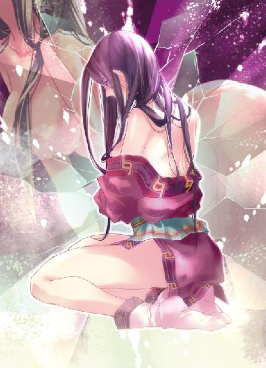
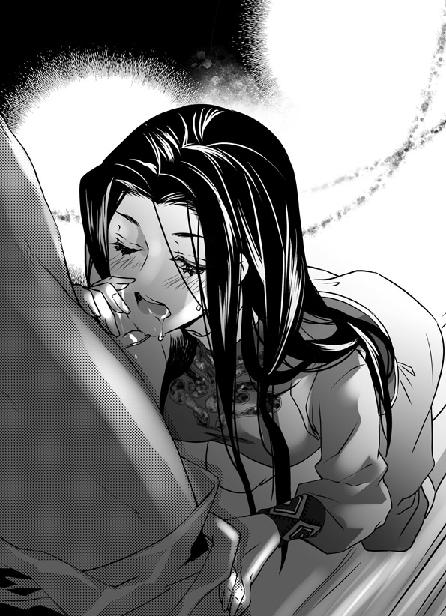
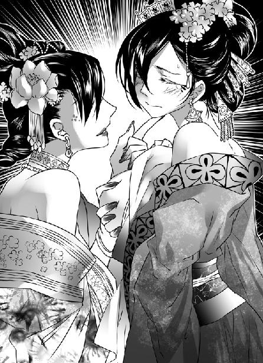

第29集·摧风破阵
江州篇（5/7）
出版日期：2011-12-08
【本集内容简介】
原以为好水川一战能够轻松收拾宋军残尾，一个督粮官却指挥着兵卒，硬是跟星月湖耗上了！
好不容易结束意料外的这一战，筠州又传来消息：宋国调集大量工匠潜行而来。
程宗扬总算了解孟非卿何以对看似昏聩的夏夜眼如此忌惮。
为了把握时机逼迫宋军尽速退兵，星月湖不得不夜袭定川寨，所有法师全部上阵。
但……充满兽人的选锋营前来驰援？宫里来的太监居然是个猛将，一招把萧遥逸打得性命垂危！
※ ※ ※ ※ ※

封面人物：小紫

插图：小紫

插图：卓云君、梦娘（赵媛）
江州城南。金明寨，宋军大营。
一阵强劲的北风吹开厚厚的帐毡，涌入中军大帐，干冷的气流带来刺骨的寒意，帐内的气氛却如同滚油浇在火上。
一名姿表雄毅的将领勃然大怒，拍案吼道：“四日前筠州常平仓失火，为何今日才报至军中？”
“回将军。”前来报信的那名官员微微躬身，然后直起腰，不卑不亢地说道：“常平仓正月十日夜间失火，下官次日便押运粮食离开筠州，直趋军中，一路不敢稍作停留。”
“筠州至烈山，沿途均设有兵站，四百余里路程马递两日可达，急脚递一天便能赶到！军情如火，岂能延误！”
“下官带有一千余石粮食，六日路程四日走完，不知下官哪里可有错处？”那名官员不动声色地说道：“急脚递是御前专用，一日疾行五百里，枢府尚不得与闻。即使将军有令，下官也不敢动用。”
发话的武将是龙卫军右厢都指挥使葛怀敏，他身为禁军大将，整个宋国比他职位高的武将也不过十几个，前来报信的只是筠州一个提举茶马的九品小官，却敢当面顶撞，不由怒火更盛，高声道：“急脚递本就是军兴之用！你们这些鸟文官——”
“怀敏！”坐在上首的主帅夏用和拦住他的话头，然后和颜悦色地对那名文官说道：“提举一路辛苦。来人啊，请提举到后帐安歇。”
那官员一拱手，转身离开大帐，对众将的怒火视若无睹。葛怀敏朝案上重重击了一拳，“一介小吏！朝廷的军务都坏在这帮文官身上！”
“他官职再小，也是文官！”夏用和沉着脸道：“想让人说你跋扈吗？”
帐中一时安静下来，当年狄青狄大帅由边将积功进入枢密院，成为武将中的第一人，结果不到半年就自请去职，没多久就一病不起，说到底就是怕了这“跋扈”二字，忧惧而亡。至于另一位真正跋扈的岳帅，莫须有的罪名，帐内众将多少都知道一些……
葛怀敏重重呼了口气，抱拳道：“夏帅！军中粮草已不足三日之用，原以为今日粮草能够运来，眼下筠州常平仓失火，重新筹措粮草，至少需时半月，即便将兵站存粮全调上来，也不敷使用。”
另一名与他平级的将领道：“若军中减食三成，再调集各兵站存粮，半月还是能撑得过的。就怕筠州官员筹粮不力，迁延时日。”
夏用和道：“有滕御史判知筠州事，筹粮的事不用尔等操心。”
这次出征的有四位厢都指挥使，龙卫军左厢任福，右厢葛怀敏，捧日军左厢刘平，刚才发话的是右厢都指挥使石元孙。他和葛怀敏都坐在下首，而在主帅旁边，还放着一张交椅，上面坐着一个锦衣人。他缓缓开口道：“任将军出兵已有两个时辰，可有消息传来？”声音阴柔，却是一名宦官。
那宦官面色苍白，下巴光溜溜没有胡须，戴着一顶平冠，冠上左右各垂下一条紫色的貂尾，正中装饰着一只金珰，正是被称为大貂珰的宫中显贵。
宋国文官与武将之间虽然彼此看不顺眼，但在看不起太监这一点上，还是很有共鸣的。不过对这位宦官，众将没有半点轻视。监军李宪，大貂珰，位居宦官职位中最高的景福殿使。他虽是太监，却上马拓边降敌，下马精通财政，如今坐到这个位置，是实打实用功勋铺起来的。
葛怀敏道：“任将军带了八个军去，便是江州也打下来了。”
石元孙听出他口气中的不满，打圆场道：“任将军久经战阵，若有消息，定会派人传来。倒是任将军方才派人送来的一枪三剑箭令人心寒，还请监军上书，请朝廷彻查八牛弩是不是真的泄露到了江州。”
李宪淡淡道：“这札子自然是要上的。但任将军虽然兵力雄厚，终究是孤军深入。江州贼寇既然有八牛弩，未必没有别的后手。”他拱了拱手，“还请夏帅定夺。”
“曹琮！王仲宝！”夏用和点了两名军都指挥使的名字，“你们各自率军前去接应。”
这两名将领都属于刘平的捧日左厢军，主将刘平身死，捧日左厢军从先锋一下掉到殿后的位置，这些天只能做做筑寨杂役，两人都以为自己的江州之战就此结束，不会再有立功的机会。夏帅的命令使两人一阵振奋，连忙起身抱拳，“得令！”
北风越来越急，乌云四合，天色随之阴暗下来。李宪换了换坐姿，心里的不安却有增无减。
任福出兵不过两个时辰，距离不会超过四十里，若是出事，营中的精骑驰援用不了半个时辰。而且他带的足有八个军，近两万精锐，江州的贼寇即使倾巢而出，也未必有一万人。无论从哪个角度考量，任福都没有败阵的可能。可李宪仍然觉得不放心。
他看了看坐在上首的主帅，虽然已经年过七十，夏帅腰背依然挺得笔直，脸上刀刻般的皱纹看不出半点喜怒。
不会是北府兵，李宪从夏帅的表情得出这个结论。那么危险会是来自哪里？
※ ※ ※ ※ ※
江州城北四十里，好水川。
惨烈的战事已接近尾声。星月湖大营只用了半个时辰，就解决了任福亲率的四个军。但面对不足两个军的宋军残部，却意外地打成一场烂仗。
遭遇星月湖大营时，龙卫左厢军的三个军正合兵一处，诸营将领都集中在主将身边。侯玄的突袭导致第三军都指挥使武英身负重伤，第七军都指挥使赵津战死，都虞侯李简、訾赟，指挥使李禹亨、郑业、陈泰、沈合……诸营将领几乎被一网打尽，摧毁了两个军的指挥体系。第二军都指挥使朱观眼见不敌，立即率领本部撤退。
眼看失去指挥官的第三军两千多步卒和第七军两千名骑兵就要溃散，谁知战场中却出了变数，一个名不见经传的随军文官挺身而出，担当起了指挥重任。他利用第七军的骑兵硬顶住了星月湖大营的攻击，然后指挥第三军的步卒占据高处，结阵自守。
此战星月湖大营的目标很清楚，重点是击溃对手，而不是歼灭。星月湖大营全军出动，加上雇佣兵，也不过三千人，对手八个军，近两万人，双方兵力一比七，歼灭战既不可能做到也没有必要。因此星月湖大营最后确定的作战计划，在侯玄原有袭击方案的基础上，融合了由斯明信和卢景提出、程宗扬命名的“斩首行动”，以宋军的指挥体系为目标，破阵斩将，重挫宋军士气。
按照星月湖诸人的预计，这两个军的指挥体系都已经不存在，群龙无首，用不了多大力气就能击溃。因此侯玄破阵之后立刻带走了自己的直属营，与孟非卿合击第八军的王珪。
龙卫左厢军强将云集，其中最耀眼的莫过于第八军都指挥使王珪。那个堪与谢艺争锋的猛将是此战的必斩目标，在星月湖的估算中，第八军一军的战斗力甚至在普通的两个军之上，因此星月湖诸人并没有把这两支失去将领临阵指挥的宋军当作对手，结果吃了大亏。
宋军失去将领后不但没有溃散，反而在那名文官的指挥下，采取骑兵密集冲锋的战术，给步卒结阵争取了时间。为了解决宋军的骑兵，崔茂、王韬、萧遥逸联手出击，几个回合下来，虽然歼灭了宋军的骑兵，宋军步卒却趁机结成坚阵。突袭变成了攻坚战，令星月湖大营兵力不足的弱点显露无遗。
这次好水川之战，星月湖大营出动了所有八个营，击溃任福带领的宋军主力之后，孟非卿与斯明信、卢景率三个营合击王珪的第八军，接着侯玄也带领直属营前去参战。剩下的四个营分别是程宗扬的一营、六营和崔茂、王韬的两个营。原属于谢艺的第一营还好一些，萧遥逸的第六营打散后加入左武军，大草原一战伤亡惨重，崔茂和王韬参加过三川口之战，受伤的士卒大多还没有痊愈，实力大打折扣。
好水川距离宋军大营只有三十余里，随着溃兵的逃亡，宋营大军随时可能得到任福战败的消息赶来支持，留给众人的时间已经不多了。
幸好战事已临近末尾，对面的宋军此时也濒临绝境。第七军的骑兵在不适合驰骋的沟壑中殊死作战，数轮攻击下来已经所剩无几，更要紧的是宋军的箭矢仅剩下千余支，对于一支以弓箭见长的军队来说，无矢可发就等于绝境。
一名身着绿色文官袍服的官员仗剑立在战阵最前方，敌寇几名悍匪数次破阵而入，都被他指挥军士挡住。这时战况稍歇，他立即命军士结阵固守，由伤兵将战死的军马拖到阵前构成屏障，一边回到阵中对奋勇作战的军士逐一嘉奖，稳定军心，激励士气。
看着宋军重新稳住阵脚，萧遥逸恨得牙痒。他在硬冲宋军战阵时，被几名骑兵缠住，大腿中了一枪，崔茂在三川口时被神臂弓射中，伤势仍未痊愈，程小子又倒霉地中了自家的毒被送到后方休养，四名营团级校官，只剩下王韬一人独撑大局。
萧遥逸恼道：“那孙子是谁？”
王韬主管星月湖大营的情报，对宋军的官员了如指掌，“是个督粮官，叫耿傅。”
萧遥逸破口骂道：“我就靠了！一个后方来的督粮的鸟文官添什么乱呢！”
星月湖八骏中，最勇的三人分别是天驷侯玄、龙骥谢艺和青骓崔茂。侯玄的玄武槊所向披靡，擅长破阵，于万军之中取上将首级易如反掌。谢艺最具韧性，长于以强对强，愈战愈勇。崔茂则如孤狼，惯于孤身闯阵，以乱战取胜。这会儿他遍体血污，盘膝坐在一旁，道：“宋军败在指挥上，军士并非不堪一战。如今骑兵尽去，我倒要看看上四军的步卒，能撑多久！”
第三军都指挥使武英被侯玄的玄武槊刺中腰侧，伤口深及尺许，重伤不起，已经无法指挥战事。但刚才贼寇与骑兵对冲的场面，他亲眼目睹，着实令人触目惊心。那伙贼寇的凶猛剽悍出人意料，往往不足十人的小队就敢与一个都的宋军正面交锋，身手的矫健和战术的精练，都是自己生平仅见。
那群敌寇的主力，大多是年纪三十以上的积年悍匪，无论武艺、战术还是经验都处于巅峰。即使在最激烈的搏杀之中，他们也能及时避开致命的攻击，保住性命，而每次还击都能令一名宋军失去战斗力。宋军虽然占据地势，勉强没有溃散，但随着第七军的骑兵伤亡殆尽，步兵箭矢告罄，距离最后的失败只是时间问题。
武英让亲兵请来耿傅，他倚在土坡上，郑重地向这位文官拱手施礼，“疾风知劲草，今日一战，乃识耿君！”
耿傅一直在第一线指挥作战，手臂、大腿多处负伤，却没有丝毫惧色，他朗声笑道：“武将军麾下好劲卒！”
武英喘了口气，“武某虽是客卿，但只怕这些贼寇的来历并非寻常……”
交手至今，这伙贼寇的凶悍有目共睹，传说中武穆王的亲军星月湖大营已经成为众人心照不宣的秘密。
耿傅道：“有死而已。”
武英叹道：“武某身为武臣，食君俸禄，兵败当死。君乃文官，并无军责，不过是随军督运粮草，陷身于此，何苦与武某俱死？”
耿傅道：“为君分忧，何分文武？”说着他拱手长揖一礼，正容道：“耿某心意已决，将军不必多言。”
武英也不是拖泥带水之人，见他这般说，不顾腰间的伤口，大声笑道：“能与耿君俱死，武某与有荣焉！”
两人相视而笑，将生死置之度外。
耿傅转身拔出长剑，高声说道：“贼寇士气已衰！只需再支持一刻钟，我捧日、龙卫诸军齐至，贼寇插翅难飞！传我号令！擂鼓！”
鼓声隆隆响起，宋军第三军仅存的士卒奋力高呼：“杀贼！杀贼！”
宋军居高临下，盾手、刀手、枪手、弓手……一排排层次井然，结成严密的阵形，即使一只蚊子也未必能飞过去。
对面的山丘上，王韬拿出闹钟，看了看时间，“我们已经拖得太久了。这次出击无果，就要立刻撤退。”
萧遥逸恨不得把那个该死的文官掐死，虎着脸叫道：“臧和尚！”
臧修跨前一步，“在！”
“剁了他！”
臧修将战刀横咬在口中，双手一分，扯开军服，露出淡金色的身躯，一言不发地朝宋军冲去。
在这里投入四个营一千二百人，却打成烂仗，众人都觉得颜面无存。是胜是败，就看这次出击能不能击溃对手了。
宋军同样在苦战，他们最大的信心来自同行的六个军，还有四十里外的十万雄师。能多支持一刻，就多一分胜利的希望。
看着冲杀而来的对手，宋军士卒“杀贼”的呼喊声越来越响，既是给自己壮胆，也是提振同伴的士气。然而对面的敌寇却默不作声，他们的队列形成一个整齐的锥形，最前方一个大汉上身赤裸，雄壮的身体泛起金属般的光泽，就像快刀上最锐利的那一点锋刃。
从战场上空俯览，防守一方发出潮水般的战吼，进攻的一方寂无声息，却像一柄尖刀狠狠刺进宋军的阵列。鲜血立刻飞溅开来，染红了川中的黄沙。
臧修手中战刀发出雷鸣般的呼啸，硬生生从宋军坚阵中杀出一条血路。他的金钟罩已运至巅峰，无论刀枪剑矢，落到身上都被震开。龙卫左厢第三军除了重伤的主将，军职最高的就剩下几个都头，根本没有人能阻挡杀得性起的臧和尚。
耿傅离臧修只有十余步，雷霆战刀劈出的鲜血几乎溅到他身上。耿傅从容自若，丝毫没有后退的意思，他紧盯着敌寇的调动，趁那名悍匪孤身直入的机会，指挥军士将后面的敌寇挡在坡下。
武英忍痛叫道：“耿君！刀枪无眼！”
耿傅反而又往前走了几步，万军丛中，他与臧修的视线撞在一起，仿佛溅起一缕火花。
臧修不是不知道这鸟文官是有意吸引自己的攻势，但自己此次出击，要的就是他的首级，就是千军万马也得横趟过去。暴喝声中，臧修手中的战刀雷霆大作，周围几名宋军被雷声震慑，出手略缓一线，立刻身首异处。臧修精赤上身，宛如一尊金甲战神般踏血而来，刀锋直指那名文官。
耿傅仗剑而立，在那名悍匪距离自己只剩三步的时候才喝道：“大斧！”
十余柄打磨雪亮的斧轮从他两侧同时劈出，攻向臧修。臧修战刀光如电闪，发出连串的雷鸣声，却无法劈断对手精钢打制的大斧，攻势顿时受挫。
宋军器之精者，无过于神臂弓与大斧。第三军没有神臂弓，用的大斧却是优中选优，无论钢质、份量，都不是一般重斧可比。这时一个都的斧手同时出击，上百柄大斧仿佛一只周身都是斧刃的机甲怪兽，滚滚前进，虽然没能斩杀那名悍匪，却把他一点点挤下山坡。
眼看这次进攻又功败垂成，萧遥逸叫道：“六哥！”
崔茂手指屈伸了一下，然后道：“不可。”
他们手边并不是没有机动兵力，臧修之外，杜元胜、苏骁和徐永各自有一个连，此外还有雪隼团的三百名佣兵，一直都没有投入战斗。晴州的雇佣兵名声一向不坏，但自从知道石之隼暗中窥伺月霜之后，无论孟非卿还是程宗扬，都对他深具戒心。这次野战把雪隼团全部拉了出来，也是担心他们心怀异志，趁城中空虚搞出事来。
交战至今，雪隼佣兵团只负责在外围防御、打扫战场，实力仍保存完整。也正是因此，他们始终留着三个连，防备可能出现的意外。萧遥逸想把这三个连和雪隼佣兵团一同押上去，孤注一掷，崔茂却不同意。
萧遥逸转头道：“七哥！”
王韬道：“这一战的目的是重创龙卫左厢军，只要孟老大能拿下第八军的王珪，即使吃不掉这边的宋军，失去所有指挥官的第三军也等于被打断了骨头。”
崔茂道：“如果我是那个姓耿的，岂能让你们说走就走？”
三人正在争执，背后忽然传来一个讶异的声音：“怎么还在打？”
萧遥回过头，先是一怔，“你怎么爬起来了？”
“一点小伤，不妨事！”程宗扬的衣服刚才被铁丝网扯破，这会儿换了身军服，外面披着条军用的斗篷，要不是脸上多了块瘀青，看上去也算威风凛凛。
萧遥逸顾不得多问，“你来得正好！”他说了目前的状况，然后道：“你是一团团长，侯二哥既然不在，主意由你来拿。”
崔茂说的没错，双方已经打成僵持的局面，如果这时候撤退，宋军不追击才是傻子。程宗扬扭头看了一眼，没见到石之隼，于是直接点名，“敖润！”
敖润一直没捞到出战机会，正在心里嘀咕星月湖的爷儿们是不是看不上自己这些佣兵，听到声音胸脯一挺，叫道：“程头儿！”
“你看宋军怎么样？”
敖润估量了一下，“挺扎手。单对单，咱们赢定了。结成阵势，不好打。”
“一对三行不行？”
敖润嘴一咧，“没问题！”
“那好！”程宗扬道：“看到那个文官了吗？把你的兄弟都拉上去！只要干掉那个文官，别的不用你管。”
“瞧我老敖的吧！”敖润把雪隼团三百名雇佣兵聚拢过来，高声道：“兄弟们！咱们雪隼团的宗旨是什么？”
佣兵汉子叫道：“公平、正义、责任和勇气！”
“宋军十万打咱们几千，公不公平？”
“不公！”
“晋国的江州，宋国派兵来打，正不正义？”
“不义！”
“东家出钱，咱们卖命，这叫什么？”
“责任！”
敖润摘下铁弓，“轮到咱们雪隼团了！让星月湖的爷儿们看看咱们兄弟的手段！跟我来！”
佣兵汉子们拔出兵刃，跟着敖润呼啸而下。三百名雇佣兵投入战场，顿时打破了僵持的战局，宋军纷纷后撤，倚仗地势勉力支撑。
萧遥逸低声道：“程哥，你比我还狠啊，这点儿佣兵全扔进去了？”
“孟老大说过，打仗最忌讳一点点添人，打成消耗战。况且我们还有三个连的预备队。”
把三百名佣兵都派上去，确实是最好的选择，但无论是崔茂、王韬还是萧遥逸，都不像程宗扬那样和雪隼佣兵团的人有过命的交情，必要时能指挥得动。
“苏骁！”程宗扬叫来原属六营的双杰之一，“你去冲宋军的侧翼，把你们那个专门吓人的炮搬上，掩护雪隼的兄弟。”
苏骁一点头，带着自己的连队绕向宋军阵侧。宋军的战吼声在川中回荡，令人热血沸腾，这边的雇佣兵和刚加入星月湖大营的新兵也纵声高呼，排遣内心深处的恐惧，只有星月湖大营的老兵沉静无声。
这些百战之士，早已不需要叫喊给自己壮胆施威。
※ ※ ※ ※ ※
胜利的天平正以肉眼可见的速度向星月湖大营一方偏斜。萧遥逸跃跃欲试，用商量的口气道：“程兄，要不咱们兄弟走一遭？”
程宗扬一口回绝，“少来！你是想让我背着你吧？哟，小侯爷居然受伤了？这枪怎么不往中间偏点，扎到你中间那条腿上呢？”
萧遥逸悻悻道：“我以前又没打过仗，吃点亏你就笑吧。”
星月湖大营解散时，萧遥逸才十几岁，与那些久经沙场的兄长相比只能算菜鸟，侯玄、崔茂能在万军丛中来去自如，都是多年血战积累的经验，不是看看就能学会的。
萧遥逸打量了程宗扬几眼，忽然露出古怪的表情，“你看起来怎么……”
程宗扬有点心虚地摸了摸脸，“怎么了？”
萧遥逸眉毛挑了挑，忽然一拳击来。
程宗扬横臂挡住，真气一触，立刻察觉到小狐狸手上只使了六成的力道，用的是诱招，真正的攻势在下面一脚。程宗扬侧身避开，接着反掌切出。
腿掌相接，萧遥逸腿法力道强猛凌厉，将他手臂震得发麻，结果却是小狐狸一声惨叫，抱着腿跳开。
“太毒了吧！朝人家伤口上打啊！”
“谁让你先动手的？这不找打吗？”
萧遥逸坐在地上“嚯嚯”地叫着痛，半晌才道：“程兄，你修为进得太快了吧？什么时候进到第五级了？”
程宗扬一怔，“有吗？”
“还差了一点——我问你，刚才你怎么知道我要出腿的？”
“你刚才那一拳击来，力道并不像表现的那么强。反而真气下沉，我猜你会出腿。”
“这是第四级入微的境界，加上我没有刻意隐藏，你作出这样的判断并不奇怪。”萧遥逸道：“但我问你，你反击的时候本来是攻我的膝盖，为什么往上移了几寸，打中我的伤口呢？”
程宗扬想了一会儿，“我出手的时候并不知道那里是你的伤口，只不过你刚才那一腿踢来，真气中有一处瑕疵，好像招术里有个小小的破绽，于是临时移了几寸。”程宗扬抬起头，皱眉道：“这是第五级吗？我怎么没感觉呢？”
“第五级的坐照，坐而忘机，观照正理。”萧遥逸上下打量着他，“你修为虽然差不多够数，运用还差了一大截。古怪，别人到了你这样的修为，真气早就运用自如了，你不会是吃了什么仙丹硬拔上来的吧？”
“吃仙丹就低人一等啊？”程宗扬道：“要说古怪，把修为划分出层级才古怪吧？就好比从四级到五级，难道说我多炼了一口气，就有天差地别的变化了？我明天感冒一场，是不是又从五级掉回四级呢？这种层级的划分很不靠谱嘛。”
萧遥逸一脸稀奇地看着他，“程哥，你哄我的吧？你是真不知道还是假不知道？”
程宗扬道：“我说错了吗？”
“错得太离谱了！”萧遥逸叫道：“要不是跟你一块儿偷过鸡摸过狗，我都怀疑你是出来混的。”
程宗扬强辩道：“划出级别是定修为的高下对吧？五级比四级高，那么四级就肯定打不过五级——这种鬼话你信吗？”
萧遥逸一个劲儿地摇头，“外行！太外行了！五级修为不一定能稳赢四级，但五级修为和四级修为打一百场，五级能赢九十九场。明白了吗？”
程宗扬哂道：“修为等级的划分怎么定的？难道也有个委员会，制定了一套标准？”
“你竟然不知道？”萧遥逸看着程宗扬理直气壮的样子，禁不住道：“你不是蒙我的吧？”
被小狐狸识破自己的底细，也没什么不好意思的，程宗扬大大方方一摇头。
萧遥逸叹了口气，“我从头讲吧。修为的层级，代表进入的境界。第一级筑基，是筑下基础，找到修炼的门径——”他压低声音道：“我敢肯定，你是把这一关隔过去了，才会说出那么外行的话。哼哼，是不是王哲？”
程宗扬笑眯眯道：“你猜的倒挺准。”
“正宗的道家底子，我还能看不出来？你要是老老实实从头开始练，一个筑基，至少要用三年，该学的早就都学会了。王哲也真是，给你筑完基就不管了。这么多年你怎么练的？”
“他就教我了一点打坐呼吸的基本功。”
萧遥逸道：“程哥，你也太天才了吧？这么多年你就瞎摸过来的？”
程宗扬老老实实道：“其实也没多少年。”
“十年？十五年？看你的水准，王哲是在你八九岁的时候给你筑基的吧？我猜是十五年，王哲给你筑完基不久就去了左武军，不然也不会撒手不管。奇怪，王哲那牛鼻子怎么就会看上你呢？”
如果自己老实说其实不到一年，不知道会不会把小狐狸气疯？自己现在的修为拿出去虽然很能唬几个人，但程宗扬心里知道，自己那点儿真气差不多全是白捡来的。王哲来不及教自己，武二这个老师又渣到极点，渣到不能再渣，殇侯那死老头跟自己相处的时间不短，却只在临分手时才揭破身份，临时指点了一把。重要归重要，跟基本功可是一点不沾边。
再往后就是孟老大在晴州给自己搞了一个月的强化训练，可能他也没想到自己当时有着四级修为，进入入微的境界，对修炼的理解却连一个初学者都不如，也没有涉及这些常识。以至于自己现在坦克都能开了，还不知道怎么爬。
“别扯这些没用的。筑基之后呢？”
“筑基之后，真气运行十二周天，收敛心神，吐纳养气，修为一到，你就能看到体内经络的运行，这便是第二级内视的境界。明白了吗？”萧遥逸道：“修为级别的划分并不是别人说你是你就是，而是从个人的进境自有感觉。”
程宗扬打了个哈哈，“内视也能划一级，这也太简单了吧？”
萧遥逸摇了摇头，“筑基是起步，内视是让你选择怎么走。每个人的经络都有差别，打个比方吧，我们都是人，但人和人的容貌气度都不一样，经络也是如此。没有内视，对自己的经络和进境一无所知，说不定两天就练死了。”
程宗扬琢磨了一会儿，“接着说。”
“气盈于内，施之于外，是谓生象。一般的小门派，练到第三级的生象，就可以出师了。”萧遥逸道：“一般江湖上的好手大多是这个层级。功底扎实的，开碑碎石都不是难事。”
程宗扬一边听一边点头，吴战威、易彪都属于这个层级，彼此虽然有高下之分，但差别并不大。
“再进一步，便是入微之境。人心惟危，道心惟微，到了入微的境界，才算一窥道法门径。”萧遥逸道：“这一关如果没有人指点，很难跨过去。我就不明白了，你是怎么练出来的？”
自己筑基是靠王哲帮的忙，第二级内视是大草原之战后，在苏妖妇的地牢中获得的。第三级生象，是在南荒，当时糊里糊涂，也不知道是不是在鬼王峒时的事。第四级入微的突破，自己却印象极深。回忆起来，在突破之前，自己有很长一段时间徘徊不前，真元虽然不断积累，但一直没有质的突变。却是在与苏妲己交手时，自己被她打得呕血，反而从她身上得到一丝助力，跃入第四级的境界。
这事当时自己就觉得古怪，现在想来更古怪。苏妲己身上怎么会有太乙真宗的正宗玄功？难道是王哲下在她身上的禁制，冥冥之中阴差阳错，又在无意中帮了自己一把？
“喂，想什么呢？”
程宗扬定了定神，“我在想第五级的坐照。我听人说，这一级是内功修行的分水岭，许多人一辈子都练不到这一级。”
“没错。要达到坐照的境界，除了明师指点，更要紧的是自身资质。许多人一世修行，真元积累虽然不少，却困在入微的境界，无法寸进。跨过这一级，才算真正的修行有为。肉身由后天返先天，犹如脱胎换骨。练到这个境界，冬天披一条薄衣不惧风寒，十几天不吃饭也饿不死，到五六十岁年纪，面貌还像三十来岁，”萧遥逸道：“世俗凡人望之如神仙，就是这种境界了。”
程宗扬想起苏妖妇和卓婊子，这两个贱人年纪都不轻了，岁月却没有在她们容貌上留下什么痕迹。自己原来就怀疑是不是修炼真元有养颜驻容的附加效果，现在听小狐狸一说，还真是这样。
“喂，”程宗扬很谦虚地问：“后天返先天，是不是天人合一？”
萧遥逸怔了一下，然后“哼哼”冷笑两声，“省省吧你。能达到天人合一的大宗师，那叫第九级的入神，这世上可有些年头没见过了。”
程宗扬失望地叹了口气，忽然又问：“三真有什么区别？”
“简单地说，真元是性命，真阳是精力，真气是你能用出来的力量。打个不是很恰当的比方，比如你赚了一笔金铢，你把其中的大头变成身体的一部分，谁都夺不走，这是真元；拿出一部分平时开销，整天油光满面，走路带风，这是真阳；财大气粗，看到哪个山头不顺眼，从利息里拿一把钱砸出去给平了，这是真气。”
程宗扬抛出自己思索很久的问题，“你刚才说每个人的经络不同，同一门功夫各人练出来也不完全一样——如果一个人练两种截然不同的内功心法呢？”
“那是找死。轻则变成废人，重则全身血脉爆裂。这种傻事没人干，一般人也干不了。”
程宗扬接着问道：“既然都是真元、真阳和真气，为什么不能相融呢？”
“你能把两只老虎关一起吗？”
“难道练了一种就不能练另外一种？我要一上手就练了五虎断门刀之类的低浅功夫，想换也不行吗？”
萧遥逸耐心地解释道：“天下武学好几千种，大部分都源自佛、道两宗，当然还有黑魔海那些邪派。同源还好办，行功路径大同小异，只不过有高下之分。比如道家六宗，公认太乙真宗的九阳神功是道宗第一神功。上乘功法，平常人一辈子也练不完，再换一种完全不一样的，等于把以前练的全都推倒重来，所以十方丛林的大和尚可能会参详道家的心法，但肯定不会去练。”
自己平时也没有感到有什么冲突啊？不过自己的真元都是捡来的，九阳神功和太一经的心法哪个顺手用哪个，平常再有五虎断门刀作掩饰，不是死老头那种大行家，或者泉贱人那种知根底的，等闲也看不出来。至于以后怎么样，还要看死老头的解决之道是不是够彻底。
萧遥逸给程宗扬好好上了一课，然后问道：“月姑娘呢？”
程宗扬一副若无其事的样子，“伤势还算稳定，就是寒毒又犯了。”
萧遥逸道：“月姑娘什么都好，就是性子太急切，上次和郭铁鞭交手也是犯了寒毒，本来身体就有隐患，还偏好冲锋陷阵，想想就伤脑筋。”
程宗扬却知道月霜那丫头并不是鲁莽或者自不量力，实在是自己这个解药有点坑人。每次月霜体内的寒毒被压制，实力大进，往往比她平常高出两个等级，很容易让她错估自己的能力。结果一旦遇到强敌，几下就被打回原形。月霜多半也心知肚明，知道寒毒不解，她那些纵横沙场的梦想都不可能实现，才会忍了自己一次又一次。就像刚才，自己刚压着她漂亮的小屁股干完，便立刻被她踢了出来，纯粹是把自己当药方用了。
萧遥逸却在皱眉苦思，一边嘀咕道：“得想办法给月姑娘治疗寒毒……喂，程兄，你看月姑娘怎么样？”
程宗扬警觉起来，“什么意思？”
萧遥逸哼了一声，“意思是紫姑娘已经跟着你了，你少打月姑娘的主意！”
“她要是打我的主意呢？”
萧遥逸像听到笑话一样，哈哈大笑起来，半晌才收住笑，叹了口气，“月姑娘和紫姑娘一个爹，性子却天差地别，如果合起来再分成两个，那就完美了。”
月霜和小紫的性子确实不是一般人能受得了的，但把她们两个中和一下，就真的完美吗？死丫头那种妖精和月丫头那种好战分子加在一起，简直是恶魔的化身……
程宗扬扯开话题，“雪隼的石团长呢？”
萧遥逸立刻提起戒心，两人四处张望，却看不到雪隼佣兵团这位副团长的身影。从卢景处得知雪隼佣兵团与龙宸暗中有牵连，众人都更上了一份心思，没想到一圈人盯着，还能让石之隼神不知鬼不觉地消失了。
“不好！”萧遥逸低叫道：“月姑娘！”
程宗扬一把拉住他，“有秋小子在。”
萧遥逸道：“他是太乙真宗的。”
“太乙真宗也有好人吧？”
“有！在大草原都死光了！”萧遥逸到底放心不下，叫道：“萧五！你去照看月姑娘！”
萧五刚才跟着他冲敌破阵，也受了伤，闻声立即跃上坐骑，朝阵后奔去。
※ ※ ※ ※ ※
战场上的搏杀还在继续，臧修的金钟罩最多只能在巅峰状态维持一刻钟，这时身上澄金的色泽已经减淡。宋军步卒有两千余人，加上失去马匹的骑兵，有近三千人的规模，在耿傅的指挥下，他们用血肉之躯硬顶着那些悍匪的攻击，一点一点拖延时间。
耿傅盯着坡下的贼寇，然后又抬起头，望向阴沉沉的天际。战场中虽然杀声震天，双方拼了命地殊死搏斗，他却有种异样的感觉，除了眼前的战场之外，周围安静得可怕。没有风声，没有鸟鸣，也没有友军的喊杀声，战场仿佛被扣在一个无形的罩子中，与外界隔绝。
耿傅叫来两名都头，下令道：“立即带你们的部属抢占北侧的山梁！”
一名都头道：“通判，那边离战场太远了。”
“不用你们作战，只要能抢占下来，就是大功！”
“是！”两名都头应了一声，带着两个都二百名宋军离开战场。
果然，贼寇发现宋军的举动之后，立即派人袭扰。让这一小股宋军占据北侧的山梁，对这边的战局并没有直接影响，但星月湖众人都明白，王珪的第八军就在北侧不远处沟壑纵横的川谷中，一旦两边合兵，宋军超过五千人的实力，足以把他们死死拖住。
山梁上很快爆发激战，双方的厮杀和飞溅的血光远在阵中也看得清清楚楚，然而没有任何声音传来。战场中几乎没有人注意到这个细节，耿傅握惯笔管的手指却不由捏紧剑柄。一直没有见到援军的原因，这时已经可以解答。龙卫左厢八个军被分割成四部分，任福亲领的四个军，自己的两个军，朱观的第二军和王珪的第八军，相距也许不过一两里地，音讯却被完全阻隔，无不以为自己陷入孤军作战的绝境中。
耿傅虽是文官，也深知士气的紧要。矢尽被围，无援可济——这种绝望感，足以令一支士气低落的军队崩溃。
耿傅高声道：“任将军的大军就在左近！诸君奋勇杀贼！”
闻说主将就在旁边，宋军士气顿时高涨起来。雪隼佣兵团的汉子虽然悍勇，但大规模作战的经验比训练过的宋军少得多，虽然将宋军冲得后退，却无法破阵而入，只能和对手一起一点一点消耗彼此的血肉。
耿傅又调出两个都，朝西面和东面突进，三千名宋军拿出几个都的军士不算什么，星月湖大营派出徐永的一个连，兵力就显得捉襟见肘了。现在还能够动用的，只剩下杜元胜手下的一个连。包括程宗扬在内，几名校官都知道预备队的重要性，不到生死关头，这个连绝不会动用。
死亡的气息在川谷中弥漫，甚至比击溃任福的主力时更强烈。这次好水川之战，星月湖大营战略方面作了调整，不再以歼敌为主，而是追求杀伤率，宋军大量士卒受伤，无法作战，真正战死的却不多。这时死亡的数量却迅速增加，程宗扬额角的生死根霍霍跳动，胃部像被人扭住一样，传来反胃的恶寒感觉。与此同时，背上的伤口阵阵痒痛，各种不适感使他一阵心浮气躁，深埋在心底的杀戮欲望隐隐膨胀起来。
忽然，一阵刺耳的声音响起。那种尖锐而亢奋的金属声熟悉无比，让程宗扬一时忘了身在何处，过了一会儿才意识是王韬带的闹钟。
王韬按下闹钟的振铃，然后道：“树旗。”
一杆大旗高高树了起来，九条豹尾在风中摇曳着，旗上字迹分明，正是龙卫左厢军主将任福的大纛。
战场似乎停滞了一下，浴血厮杀的宋军抬起头，望着主将的大纛在敌寇营中举起，仿佛被一盆冷水淋下。被长官鼓动而燃起的希望，瞬间破灭。
王韬竖起任福的大纛，是原定的计划，以主将的战旗引诱王珪的第八军朝自己的方向移动，给他们设下圈套。但计划赶不上变化，眼下这边的宋军还没有溃散，王珪的第八军一旦攻来，自己就会落入两面受敌的险境。
王韬挽起焚天斧，雄鹰般从丘上飞起，掠向敌阵。长斧一抡，一名都头连人带刀被拦腰斩断，上半截身体带着一蓬血雨冲天而起，碎裂的战甲片片飞散。
宋军为之气夺，潮水般向后退开。耿傅须发飞舞，怒喝道：“怕什么！此战有进无退！”
“弓手听令！”耿傅厉声喝道：“看准那名匪首，把所有箭矢都射出去！”
一名文官表现出的非凡勇气，激起了宋军士卒的血性。还有箭矢的弓手纷纷张开弓弩，朝着那名匪首的方向奋力射出。
宋军的弓手以力气为主，射术倒在其次，这种依靠阵形、攻击力度和覆盖密度射击的战术思想其实与近代火器战争的思想正相契合。近千支利箭呼啸而出，编织成一张致命的大网。王韬的焚天斧迸出火光，火龙般撕开箭网，如果宋军有足够的箭矢，这百余步的距离足够耗尽他的真气，但现在，宋军的步卒坚阵就要面对八骏之一朱骅王韬的重斧了。
耿傅连声下令，指挥士卒围攻敌寇，突然他身体晃了一下，一股鲜血从他颈间涌出，顷刻就浸透了他绿色的官袍。耿傅双手握剑，柱在地上，鲜血狂涌的颈中露出一截银色的隼羽。他竭力扭头，朝侧方看去。
贼寇都被挡在坡下，旁边离自己数十步的地方，却不知何时多了一个高瘦的身影。他双手没在袖中，面上带死神般淡淡的微笑，然后袖口一动，又一枚银隼箭流星般飞来，正中耿傅眉心。耿傅向前迈了一步，似乎想举剑发令，然而猛地失去所有力气，重重扑倒在地。
“通判死了！”
惊惶波涛般席卷了宋军的残兵。耿傅绿色的官袍已经成为他们最后的信心，这时看到通判倒地，不少军士丢下武器，四散奔逃，刚才还严密整齐的阵形顿时雪崩一样溃乱下来。
敖润唾了口血沫，叫道：“孙子！你们也有顶不住的时候！给我追！”
副团长石之隼出现在战场中，他拦住敖润，说道：“我们是被雇佣来江州的，一切听程公子的吩咐。”
他这一声中气十足，雪隼团几百佣兵汉子都听得清清楚楚。程宗扬与萧遥逸面面相觑，难道石之隼真的是来帮忙的？
有几名宋军武官试图重新收拢阵形，却被溃兵冲倒。逃跑的军士越来越多，很快宋军就不再有战斗的勇气，人人争相夺命，自相践踏。混乱中，只见都指挥使武英抱住耿傅的尸体，仰天大叫几声，然后拿起佩剑，切断了自己的喉咙。
与第三军的战斗已经比预计拖延了半个时辰，击溃宋军之后，星月湖众人来不及打扫战场，便立刻与孟非卿所带的主力会合。
王珪只有一军，星月湖大营却以孟非卿为首，投入了期明信、卢景三个营，随后连侯玄也赶去参战，兵力接近一比二，是江州之战比例最接近的一次，可见星月湖上下对王珪的重视。
程宗扬抵达时，战事刚刚结束。孟非卿、侯玄和斯明信都脱了军帽，向地上的对手致敬。
“王珪三次换马，孤身杀伤我兄弟数十人，两根铁鞭全部打断，被我的天龙霸戟震伤虎口，还奋击自若。”孟非卿道：“是条好汉子。”
以王珪的修为，大有机会突围逃生，但侯玄设下计策，在己方阵营树起龙卫军任福的大纛，使王珪误以为主将尚在，指挥军队全力向大纛的方向猛扑。战至午时，王珪部属已经伤亡大半，有军士试图逃走，被王珪亲手斩杀。王珪向着临安的方向再拜之后，单骑踏阵，独斗孟非卿，力战身死，部属随之溃散，在星月湖的追杀下死伤殆尽。
侯玄加入之后，卢景被调去阻挡朱观的第二军，见到战事已经结束的旗号便迅速撤离。在宋军得到消息、大举进攻之前，众人已经安然撤回江州城。
※ ※ ※ ※ ※
好水川一战，令宋军大营一片哗然。起初龙卫军回报时，只说有小股运输物资的贼寇，葛怀敏还觉得任福动用八个军是小题大作。当从溃兵口中得知任福军遭遇贼寇主力的消息，夏用和、李宪立即率兵赶赴战场，但为时已晚。
前后不到两个时辰，好水川已经血肉狼藉。此战清点的结果，令宋军上下大惊失色。龙卫军左厢八个军除朱观的第二军据险退守以外，其余七个军自主将任福以下，七名军指挥使桑怿、武英、常鼎、刘肃、王庆、赵津、王珪尽数战死，都虞侯、营指挥使等各级将校战死不下四十人，士卒死伤过万，勇将云集的龙卫左厢军几乎是全军覆没。
更让诸将心寒的是，此役真正战死的士卒只有两千余人，其余近万名都是被贼寇击伤，或者在溃逃时自相践踏造成骨折而失去战斗力的伤员。尤其是被铁丝网刺伤的士卒，伤口大多溃烂，宋军用尽了营中所有的解毒药物，才救下这些人的性命。
营中一下多了近万伤员，大半一月之内都无法再上战场，粮食消耗却丝毫不少。军粮充足时，这样的战果夏用和还可以庆幸，毕竟大部分伤员都可以恢复，如今筠州存粮被烧，军中余粮连半月也未必能支持下来，一下多了近万负累，再加上抚恤、养护的费用，巨额的支出足以让任何一个将领做噩梦。
次日的军事会议上，第一次有人提出退兵。
“军中本来就乏粮，如今又多了这么些伤兵，犹如雪上加霜。”捧日军右厢都指挥使石元孙道：“不若我军暂退，返回筠州就食。”
葛怀敏年轻气盛，当即道：“金明寨和定川寨呢？要不要留军驻守？”
石元孙反问道：“谁守？一把火烧掉！留着给那些贼寇用吗？”
“不能退！”龙卫军右厢第一军都指挥使赵珣道：“贼寇不足万人，我捧日龙卫二军尚有六万精兵，如何能退？”
捧日军右厢第七军指挥使周美道：“什么样的精兵也不能不吃饭。筠州常平仓被焚，粮草从何而来？”
有人折衷道：“先遣一军，护送伤兵返回筠州，再汰去老弱，留五万精兵足矣。”
忽然一名大汉站了起来，抱拳道：“夏帅！我军久驻城下，兵疲无功，却让贼寇来去自如，曹英不才，请领一军攻城！”
一直没有作声的夏用和沉下脸，然后将铁如意“咣”地扔在案上。曹英话里的意思是，如果每日围攻，敌寇岂敢倾城而出？这是在指责自己手握大权，却拥兵不动，以至于让敌寇打出好水川一战。
“老夫上阵杀敌时节，汝父尚是黄口小儿！”夏用和咆哮一声，然后拂袖而去，远远扔下一句话：“谁敢无令出兵，定斩不饶！”
帐中一片死寂，夏用和在军中积威多年，此时发怒，谁都不敢造次。可这次军议关系到数万大军的生死荣辱，一军主帅什么主意都不拿，就这么一怒走了，诸将都是打老了仗的，哪里见过这种奇事？
半晌李宪才笑了一声，“大伙不必担心，夏帅自有定计。各位将军小心看好自己的兵。十万大军在外，不是闹着玩的。”
李宪宽慰几句，诸将陆续散去，石元孙和葛怀敏却留了下来。
“大貂珰，夏帅究竟是个什么章程？”这会儿帐内再无旁人，石元孙言语也不避讳，说道：“我们都知道江州不好打，可谁能想到岳贼还有这么多余孽？”
葛怀敏却道：“岳贼余孽再凶悍，也是十几年前的事了。我问过溃兵，敌寇有不少是新附逆的，人数也不多。夏帅到现在也没拿个主张出来，这么多军队在城下，既不围又不攻，少不了被人家一口一口吃掉。”
曹英是他的部将，葛怀敏话里话外都是同样的意思，李宪如何听不出来？石元孙主退，葛怀敏主战，夏用和的心思他却怎么也琢磨不透，军中赫赫有名的夏夜眼何时变得这样昏愦了？不围不攻，难道是想让敌寇自己走出来？可好水川一战，敌寇倾巢而出，夏夜眼也没什么动作。
夏夜眼征战多年，是被朝廷倚为柱石的大将，以往作战颇能任贤纳谏，博采众长，可这次出兵江州，却一改往日作风，刚愎自用，容不得半点意见，难道真是老糊涂了？
李宪心里猜疑，脸上却不肯露出底细，打着哈哈道：“夏帅老于军伍，这么做自有他的用意。”
坐拥数万大军，却一仗不打，石元孙和葛怀敏都觉得浑身力气无处可使。眼看监军的大貂珰也没有主意，两人都有些泄气。
过了会儿，石元孙道：“还有一事。刘平刘都指挥使被黄德和那厮诬告，军中尽人皆知，我们是武将，不好替刘将军分辩，大貂珰……”
李宪点头道：“此事本监已有札子呈递，料想这几日朝廷就会派人前来。两位放心，有本监在，绝不会让任何人冤枉。”
石元孙和葛怀敏放下心来，拱手向大貂珰告辞。李宪摸了摸袖中的札子。军中诸将明知刘平被冤，苦于不好分辩，却不知军中尚有一位进士出身的武职，已经通过自己上书朝廷。
张亢，以他进士出身、在地方任过官职的资格，在军中做个都监也不甚难。若不是得罪了贾太师，何至于只当个微不足道的步兵都头。如果把他收在麾下，倒是一大助力，只是不知道他得罪贾太师有多深，自己扶持他，如果引来贾太师的恼怒，那就得不偿失了。
※ ※ ※ ※ ※
“石团长回来之后，先去了水香楼，黎明时才离开。然后去赌坊掷了几把大小。”萧五道：“石团长指上功夫出色，虽然赢得不多，但我看他的手法，多半要掷几点就能掷出几点，去赌坊似乎不是为赢钱。”
程宗扬揉着太阳穴没有作声。
萧五继续道：“离开赌坊大概是午时，石团长又回到水香楼，泡了一个时辰的澡，然后就回了宅子。中间和几个雪隼团的人见过面，并没有什么异常。”
雪隼团交游广阔，在江州也有关系，别人住的客栈军营，石之隼却趁城中大户搬迁，租了一处大宅，算下来比住客栈还便宜。如今江州人去城空，星月湖的人又不可能各处巡守，他要和外人接头，城中到处是空宅，想查都无迹可查。
程宗扬道：“盯紧姓石的，看看有没有和生人来往。”
等萧五离开，程宗扬才起身解下斗篷。自己本来应该在阵后养伤的，却被月丫头踢了出来。这会儿毒性虽然已经解除，但满背都是被铁丝网挂出的伤口，看来这两天自己只能趴着睡了。
旁边伸来一双玉手，替他接过斗篷，却是卓云君。这处客栈的后院是三面小楼，南面一侧留着门，关上门，院里只有一个天井。小紫从筠州回来，推说自己好静，平时从内插了门，再无一个外人。梦娘和卓贱人虽然在楼内，却从未与外人接触过。
至于祁远，这些日子在水泥窑监工。每隔一两日，兰姑来陪他一宿，两个都是豁达人，露水夫妻倒也做得恩爱。
楼内既然没有外人，卓贱人平时的装束就火辣多了。她上身围着一条棕红色的熊皮抹胸，下身穿着及膝的熊皮裹腿，一条手掌宽的熊皮短裙围在腰间，侧面开着口，里面却是光溜溜的，走动时甚至连下体也遮掩不住。这种衣物不管留在身上还是脱下来都方便，主人来了兴致，卓云君只要弯下腰，便能服侍。
卓云君扭动着腰肢，将斗篷收起来，那具丰腴熟艳的胴体被熊皮包裹着，白花花的肌肤与粗糙的兽皮相映成趣，程宗扬忍不住伸进去摸了几把，然后脱下沾满血迹的衣服，赤条条走到院中。
木桶里放着新汲的凉水，程宗扬兜头浇下，冲去身上的沙土和血污，然后用力擦洗。梦娘拿着巾帕，有些惊讶地看着他，小紫俏生生倚在檐下的廊椅中，笑道：“好冷呢。叫人送些热水，让卓美人儿陪你洗啊。”
程宗扬解开头发，用皂角揉搓着，一边道：“你看我背上的伤，能在木桶里泡吗？要伴浴，你来还差不多。”
“好啊，木桶太小啦，我们一起去江里。”小紫拍手笑道：“人家脱得光光的，让你追好不好？”
“说点别的吧！能在水里追上你，我得游得比鲨鱼还快！”
程宗扬冲去身上的污迹，然后从梦娘手里拿过巾帕，抹去浑身水珠，一边道：“你那个便宜姐姐又受伤了。”
小紫道：“若是要紧的伤，你会现在才告诉我吗？”
程宗扬刮了刮她的鼻子，“就你聪明。”
小紫伤势渐愈，虽然还有些慵懒，但精神好了许多，容颜愈发娇艳。这时她美目含笑，白玉般的娇靥多了几分嫣红，娇美的唇瓣微微挑起，散发出珠玉般的光泽。程宗扬越看越爱，禁不住低下头在她唇上亲了一口。
小紫的唇瓣软软的，带着香甜的气息，让人仿佛要沉醉其中。程宗扬心头的欲望越来越强烈，今天他吸收的死气无论是质还是量，都几乎能与大草原上那次相比——那次双方虽然死伤惊人，但大量死亡是在自己离开战场之后才出现。这次自己吸收的死气不下两千道，丹田早已满溢。可惜死丫头跟了自己这么久，摸也摸过，亲也亲过，却始终没有乖乖服侍过自己。
这会儿亲着她的小嘴，程宗扬下身不由怒胀起来。他在肚子里叹了一声，相处这么久，自己还不知道死丫头的心结？这种事只有慢慢来了。
程宗扬松开她的小嘴，又宠溺地捏了捏她娇俏的鼻尖，这才恋恋不舍地放开手。小紫眨了眨眼睛，忽然发出一声娇笑。程宗扬低头看时，才发现自己阳具硬梆梆挺着，充血的龟头又圆又大，看上去比上边憋得还难受。
“有什么好笑的！”程宗扬作势抓住她的肩膀，一脸狞笑地说：“小心我给你来个霸王硬上弓！”
小紫扯住卓云君塞到他怀里，笑道：“拿她泄火好了。”
“算了吧。”程宗扬放开卓云君。
自己吸收的死气还没有转化成真元，仍是以真阳的形式存在，现在交合，免不了外泄。泄给月霜没关系，就当日行一善，上了卓贱人，那可太便宜她了。谁知道她得了自己满蕴真阳的精液，会不会搞出什么花样来？
抓紧时间练功，还能赶上和卓贱人干一炮。程宗扬道：“两个时辰之内，天塌下来也别来打扰我！”一边说，一边就那么硬挺着回到楼内。
盘膝趺坐，收敛心神，用吐纳调整呼吸的频率，逐渐敛息入定，片刻后，程宗扬舌尖抬起，顶住上颚，搭成天桥，由外呼吸转为内呼吸，进入物我两忘的境界。
通过内视，可以看到由生死根转化的浓郁真阳蓄满丹田，仿佛一片莹白的海洋。组成海洋的每一滴水，都是一点独自旋转的光粒。程宗扬催动气轮，周围的真阳像浩瀚的海洋般涌动起来。真气由丹田直下会阴，再沿脊柱上行，通关元，过大椎，上玉枕，到达颅顶的百会，然后再由神庭、印堂，降至上颚，到达督脉的终点。接着一股清凉的气息从舌尖淌下，犹如一股清泉从胸腹经鹰突、鸩尾、璇玑诸穴向下，沿任脉汇入丹田。
真气不停滋长着，犹如长江大河，在经络间运行。气息游动间，似乎触摸到经络承受极限的边缘，那些莹白色的经络，仿佛一根根透明的管子，在真气的冲击下不断鼓胀，似乎随时都可能突破极限。
第五级的修为是一道分水岭，只有达到第五级坐照的境界，才能真正被称为高手，不惧疾病风寒，衰老期大幅延后，更有脱胎换骨、洗髓易筋这些神奇的功效。而程宗扬更关心的，则是王哲曾经说过，自己修为达到五级，要去一个地方，太泉古阵。
程宗扬没想到自己会这么快从菜鸟进入到第五级边缘，还没有顾得上打听太泉古阵的详情。说起来，自己与王哲相处时间虽短，但现有的一切，一大半都是他的恩德所致。王哲曾经交待自己做三件事：第一件照顾月霜，很难说自己是不是做到了。第二件，那只让自己替他执掌太乙真宗、消除教中内乱的锦囊，基本上已经搞砸了。还剩这第三件事，无论如何也要替他做到。
天色不知不觉暗了下来，程宗扬竭力将生机转化成真元，试图冲破那道看不见的极限。然而尽管真气越来越多，他却感觉丹田内就像一只蚕蛹，被厚厚的茧壳包裹着，竭力舒展的翅翼被局限在狭小的空间中，难以张开。另一方面，自己的翅翼还在不停生长，似乎要被空间勒断。
那种被束缚的憋闷感越来越强烈，程宗扬坚忍良久，可滋生的真气似乎耗尽了内息，胸口传来窒息般的感觉。终于，程宗扬忍不住由内呼吸转为外呼吸，急促地吸了口气，就在这时，无数纷杂的意象涌入脑海，种种不甘、恐惧、仇恨、痛楚……各种死者在濒死前的体验冲击着灵台，仿佛要把他的灵魂撕碎。
程宗扬紧守着灵台一点清明，苦苦支撑。真气在经络间迅猛涌动，仿佛泛滥的洪水冲击着堤岸。手脚的经络在真气冲击下开始变形，自己的四肢仿佛正在不断膨胀变粗。真气愈发狂暴，残留在丹田的真阳抹上一层诡异的红色，仿佛鲜血汇成的池沼。
程宗扬听说过修行中的种种幻觉，却没想到它会来得如此突然和猛烈。突然间，真阳仿佛全部汇聚在一处，朝自己下身涌去。阳具暴跳着勃起，精液就像沸腾一样亟需宣泄，可龟头的冠部却像被一个铁箍束住，无法射出。
难以发泄的欲火烧炙着神经，让程宗扬宛如置身炼狱。血色的真阳从丹田涌出，仿佛涌入每一寸肌肤，杀戮和宣淫的欲望充斥脑海。他仿佛看到卓云君正走进静室，自己抬起妖兽般的长爪，一把抓住那贱人。卓云君胴体上的熊皮在利爪下粉碎，露出白美的肌肤。程宗扬挺身将拳头般的龟头狠狠捅进她下体。粗如人腿的肉棒捣进美妇的蜜穴，卓云君脸上露出痛楚和恐惧的表情，她张开嘴，唇间涌出鲜血。
程宗扬奋力抽插几下，欲火不但没有被遏制，反而愈发高涨。他一转头，看到泉玉姬的身影，随即丢开卓云君变冷的肉体，将那个漂亮的捕快压在身下。泉贱人凄声惨叫，却没有发出半点声音，透过她张大的嘴巴，程宗扬看到一条被割断的舌头。
原来是拉芝修黎。程宗扬把那具光溜溜的肉体踩在脚下，两手抓住她雪白的腰臀，仿佛要将她肉体折断一样，用力干着这个天竺美妇。和前两个女人相同，拉芝修黎的肉体虽然美妙，却无法满足他野火一样的欲望。程宗扬扯出躲藏在一边的阿姬曼，一举撑破她幼小的阴道，用母女俩的肉体抚慰着自己怒胀的阳具。没有哪个女人能承受自己巨大的阳具，程宗扬抽送了几下，两具肉体已经不堪使用，他随即转身，抓住芸娘和丽娘。
一个又一个或是熟悉或是陌生的女子进入自己的视野，死去的阿葭和莺儿也复活过来，加入到这场死亡与性欲的狂欢。天际挂着凄清的残月，好水川的山谷中淌满鲜血，那些白皙的肉体一具具浸在血泊中，四肢交叠着，摆出各种撩人的姿势。自己在女性的尸山血海中疯狂地追逐着猎物，被欲望驱使着，不停地屠杀和淫虐。
身体在真气的冲击下膨胀变形，仿佛化为妖魔，如果自己停下脚步，身体满溢的精血就会立刻爆裂。
一个模糊的影子出现在山谷尽头，下一个瞬间，自己已经掠到她背后。程宗扬一把抓住她，将她推倒在地，然后撕开她的衣物，从后面狠狠干进她体内。身下的肉体无助地挣动着，程宗扬一边抽送，一边拧下她的头颅，高高举起。
月光下，一张深藏在心底的面孔出现在眼前。
紫玫望着自己，那双充满无穷哀伤的眼睛，正慢慢失去光彩。
程宗扬大叫一声，心头像被锯齿割破，滚烫的热血泼溅出来，将月光下的天宇染得猩红。
忽然，下体一动，仿佛被一张温润的小嘴含住。程宗扬怔怔望着紫玫滴血的头颅，丹田仿佛一只无底的沙漏，浑身的力气迅速消失。
下体的触感越来越清晰，程宗扬却仿佛化身为岩石，与那只头颅四目交投，在好水川的旷野中被风沙侵蚀，一点点崩坏掉落。
不知过了多久，紫玫的眼睛突然动了一下，瞳孔深处透出一丝光彩。程宗扬野兽般嚎叫一声，眼前一切旋转起来，苍穹变幻，星转斗移……画面交错间，天际凄冷的月光变成一豆灯光，风沙刺骨的好水川也化为一间静室。
小紫望着自己，如星的美眸中充满关切。她屈膝跪在自己身下，那张嫣红的小嘴正含着自己的阳具，细致地吞吐着。而自己正挺身而立，一手还抓住她的秀发。
身体重新有了知觉，感觉到心跳和气轮的旋转，灵台恢复清明。一股酸意冲上鼻腔，程宗扬喉咙哽住，哑着嗓子道：“死丫头……”
小紫眨了眨眼睛，露出一丝笑意，她两手环着自己的腰，光洁的玉颊贴着自己的小腹，娇美的红唇裹住阳具，舌尖在龟头上轻柔地挑弄着，传来滑腻而酥爽的感觉，每一丝细微的碰触，都真切无比。
她衣衫破碎大半，一侧雪滑的肩头裸露出来，白玉般的颈中还有被自己掐过的瘀肿痕迹。那件贴身的龙皮胸甲被扯开一半，龙角状的黑色皮革歪到一边，露出一侧浑圆的雪乳，优美的形状，仿佛一件精心制作的艺术品。
小紫轻轻吸弄着，安抚自己狂暴的欲念。唇舌美妙而柔滑的触感，使自己心底那头暴戾的妖兽渐渐蛰伏下来。程宗扬伸出手，摩挲着她精致的面孔，指尖从她眉轮一点一点摩挲到耳垂，仿佛要将她的玉靥刻在心底。
阳具在她口中吞吐着，忽然一滑，被一股吸力纳入喉咙深处。一团柔腻无比的软肉包裹着火热的龟头，有节律地轻轻翕动，那种奇妙的感觉，与自己以前的体验完全不同。
程宗扬忽然省悟过来，这是小紫的喉鳃。
死丫头整天叫自己大笨瓜，其实……自己一点都不笨。与小紫相处这么久，他甚至比她自己更了解她，知道她那个化解不开的心结。
两人在一起时，亲吻搂抱这样亲密的举动已经习以为常，甚至连自己干女人都不避她。可小紫从来没有让自己射过一次精。不要说性交、肛交和口交，就是连用手让自己爽一下都没有做过。
这并不是小紫故作矜持，或者故意吊自己的胃口，而是她下意识拒绝这样去做。小紫生存的环境，给她的影响实在太过深刻。在她成长的岁月中，见过太多女子自愿或者不自愿地与男人交欢的场面。
在鬼王峒，在南荒，甚至在六朝，无论什么样的女人，当她们伏在男人身下时都宛如奴婢。不管她们曾经的身份如何，那一刻，她们都是作为男人发泄欲望的玩物、猎艳的战利品、买卖的交易品而存在。
而小紫的母亲，那个来自碧鲮族的艳姬，为了漂亮衣服和好吃的食物，轻易便拿肉体交换的举动，更让这个少女刻骨铭心。这一切给小紫的影响就是：在她潜意识中，拒绝成为女人，拒绝像女人一样去服侍男人。
因此，她虽然有着绝世的容颜，却更喜欢像男人一样征服女人。她可以和自己唇舌相接，却不会去亲吻自己男性的象征。她有着娇柔入骨的风情，却不肯拿出最少的一点来讨好男人。甚至连她超乎寻常的智力和记忆力也不仅仅只是天生的，程宗扬总觉得她有一种信念，她要用自己的智慧证明，一个女人可以比所有男人更聪明。
因此，她迟迟不肯成为自己的女人，她害怕会变成那种附庸于男人的凡俗女人。她怕把一切交给自己，伏在自己身下，便从形式上与卓云君、泉玉姬那些女子沦为一处。这是小紫化解不开的心结。
但程宗扬并不打算揭破这些，就让她觉得自己笨笨的好了。自己会耐心等待，等待她心里开出鲜花的那天。
程宗扬想起在南荒的时候，武二那个臭不要脸的曾用他的破锣嗓子嚎过一首山歌：妹是鲜花送哥栽，哥有办法让花开，一夜浇你三回水，哪朵不开用手掰！
粗犷到粗鲁的民谣引来一片笑声，当时苏荔笑着唱道：千里采花来送哥，想要找哥隔条河，妹变蝴蝶飞过来，有缘千里来会合……
想起武二和苏荔那对在哪儿都能放得开的狗男女，程宗扬唇角禁不住露出一丝笑容。
有碧姬那样的母亲，小紫的技巧简直是天生的，她娇嫩的喉鳃宛如一团暖暖的果冻，在龟头上柔腻地滑动着。她的吸吮有着奇妙的节律，自己无法宣泄的欲望被安抚下来，狂乱的真气渐渐平息。肉体欲望虽然还像火一样强烈，脑海中杀戮的狂念已经平复。
不知过了多久，先前像被铁箍束住的龟头在她喉鳃中胀起。程宗扬试图拔出阳具，小紫却抱住他的腰，将他阳具含得更深。
程宗扬屏住呼吸，龟头一阵跳动，在她娇媚的小嘴中喷射起来，浓稠的精液一波波射入她喉咙深处。
良久，小紫吐出阳具，一手掩着喉咙，小声娇嗔道：“你射得好多……”
程宗扬爱怜地抚着她颈中的瘀痕，“痛不痛？”
“有一点。”小紫嫣然一笑，“还好，味道不算很讨厌。”
程宗扬坏笑道：“天天给你吃好不好？”
小紫啐了他一口，然后拉好破碎的衣服，过了会儿道：“大笨瓜，你刚才为什么要笑？”
程宗扬笑道：“我想起南荒一首山歌，”他清了清嗓子，放声唱道：“妹是山上映山红，哥是水里一条龙！青龙爬在鲜花上……后面我忘了。”
小紫挑起唇角，眼波狡黠地一转，“我知道。但不告诉你。”
程宗扬跪下来抱住小紫，低声道：“死丫头，我说过，绝不会让你受一点委屈。”
小紫拨了拨他的阳具，笑道：“那你就委屈了。”
程宗扬搂住她香软的身子，小紫伏在他肩上，半晌才道：“你刚才的样子，好吓人……”
“我……我是走火入魔了吗？”
“嗯。你浑身的血脉都鼓了起来。还有你这里，”小紫点了点他额角，“红得好像要流血一样。到底是怎么了？”
“我离第五级还有一步，却没迈过去。”程宗扬苦恼地说道：“恐怕要找个人指点一下了。可惜死老头离得太远，这边又脱不开身。”
“心急吃不了热豆腐。”
程宗扬不由地笑了起来，小紫的声音圆转柔滑，带着奇妙的共鸣声，这样平平常常一句俗语，从她口中说出来，每一个字都如咳珠唾玉，分外好听。
“论聪明我比不上你，不如多下点力气，混个过得去的高手。至少再遇见苏妖妇，不用被她追着打。”
“星月湖那么多傻瓜，还不够你用吗？”
“做生意讲究投资，回报率最高也最可靠的投资，莫过于投在自己身上。”程宗扬道：“我不是说星月湖的人靠不住，但我出门，总不能把孟老大、小狐狸他们都带上吧？”
“你不想把星月湖收过来吗？”
程宗扬很慢地摇了摇头，“不是我不想，而是时势不足。星月湖的人你见过不少了，别说那几位爷，就是一般的尉官、士官也都是个顶个的猛人。想让他们服气，不是靠交情就够的。”
“所以你要求补充新兵吗？”
程宗扬大摇其头，“补充新兵我倒没别的想法。那些新兵都由老兵带着，跟我没什么关系。星月湖大营是你爹爹……姓岳的一手带出来的，彼此间已经有一二十年的交情。就好比我和祁老四、吴大刀他们正做着生意，这会儿突然来了个陌生人，说他才是掌柜的，谁肯服气？就算他真有实打实的本领，也得能拿出手段，镇住我们才行。”
小紫静静听着，没有作声。
“所以，我面对的就是这样一个局面，星月湖大营有一个很稳定、很团结，而且非常强有力的团队。作为一个外人，要在这样一支团队获得一席之地，甚至更进一步，获得主导权，最好的做法，就是树立一个目标，引导他们按我的思路来进行。论打仗的经验和能力，星月湖大营随便拉一个出来都比我强，所以我要引导他们的思路，进入到我最擅长的领域。”
“这不是阴谋手段，而是堂堂正正的行事方法。星月湖大营都是人中英杰，用阴谋诡计只会让他们看不起。所以我提出商战，弥补星月湖大营战略层面的不足，同时也是我能以自己的经验帮助他们的地方。这是一个双赢的方案，星月湖大营得到胜利，我得到自己应该得到的位置。”
小紫笑道：“我明白了，你在晴州为什么要去打黑魔海。”
程宗扬苦着脸道：“就知道你会揭我伤痕，没错，那是个不太成功的尝试。不过也小有所得。”
在晴州拔掉黑魔海的据点，是程宗扬有意引导星月湖诸人做的第一件事，单纯从完成情况来看，价值并不太大，没有获得更多关于黑魔海的信息。但在此役中，自己的意见被充分采纳，并赢得了臧修和敖润等人的认可，因此程宗扬说小有所得。不过这件事最大的助力是孟非卿的无条件支持。对自己掌控星月湖大营权力的每一步，他都在背后尽力支持。以粮食交易为武器的商战，是自己脱离孟非卿扶助的第一步，也是自己对他最好的回报。
“可单有这些还是不够。星月湖大营龙虎如云，只靠做生意、出主意，未必能让所有人都看得上。孟老大在晴州就开始教我军事，三川口给我了一个无关紧要的支持任务，好水川之战本来早就安排好了，一直等到我回来，让我和小狐狸合领一军——每次打仗都把我拉上，是告诉我：要想真正在星月湖大营立足，还是要靠军功。”
“所以我有一机会，就急着突破第五级。不然别说和侯二哥、崔六哥比，就是让我像臧和尚那样冲阵，我都未必能活着回来。”程宗扬拥着小紫叹了口气，“这次差点走火入魔，下次不知道要等到什么时候了。”
小紫笑道：“你想找人指点你突破第五级，我倒有个法子。”
“什么办法？”
小紫扬声道：“卓美人儿。”
程宗扬立刻叫道：“喊她干嘛！”
找卓云君自己也不是没想过，但这种晋级的修炼，走错一点就万劫不复，卓贱人随便做点手脚，自己死都不知道怎么死的。
卓云君进来，正听到程宗扬表示对自己的戒心，不由得一脸尴尬。小紫却笑道：“大笨瓜，你若死了，她就剩我一个主人了。你觉得她会选你这个软心肠的傻子呢，还是选我呢？”
程宗扬拍了拍脑袋，自己对卓贱人不放心，怕她使坏，却没从她的角度考虑过，对卓贱人来说，自己这个主人比死丫头起码要好两万多倍。就从这一点讲，她也不敢让自己出半点岔子。一旦确认安全，卓贱人无疑是最好的选择。死老头离得太远，孟老大的功夫又走得跟自己不是一个路数，卓贱人可是正经的太乙真宗六大教御之一，自己的修为本身是王哲打的底子，除非王哲复生，恐怕找不到比她更合适的人选了。
小紫走到卓云君面前，笑道：“好女儿，要乖乖的哦。”
卓云君恭恭敬敬应道：“是。”
程宗扬抱住小紫，“你不用走吧。”
“大笨瓜，”小紫在他耳边轻声道：“人家也要去修炼。”
程宗扬明白过来，坏笑道：“我就说每天喂你吃吧。”
小紫用力踩了他一脚，离开房间。卓云君跪在门侧，等她身影消失，才掩上门，转身看着自己的主人。
※ ※ ※ ※ ※
漫长的一夜终于过去，东方的天际渐渐发白，紧闭的房门微微一响，从里面打开。
一个秾艳的妇人扶着门框，赤条条从房内出来。她身无寸缕，裸着白美的玉体，似乎耗尽了体力，步履蹒跚。那张风韵艳致的面孔上，潮红还未褪去，唇上的胭脂褪了大半，唇角还沾着浊白的精液。一对丰挺的雪乳在胸前晃动着，被握得红肿，乳沟湿湿的，还留着乳交的痕迹。她下身的蜜穴不知被干过多少次，两腿都无法合拢，股间的凤眼美穴一片狼藉，穴口不住淌下浓精。浑圆的雪臀更是像被殴打过一样被干得发红，臀沟满是精液，中间那只小巧的菊肛被阳具捅出一个圆洞，随着她的步伐，大股大股的精液不断从屁眼儿中溢出，顺着两条白美的玉腿一直淌到脚下。
她就像娼妓一样，一身白馥馥的美肉都被人尽情肏弄过，虽然被干得走路都有些吃力，脸上却挂着笑容，那笑容中隐约还有几分骄傲。
小紫推开门，只见程宗扬盘膝坐在地上，像刚睡过一觉似的神清气爽，精神饱满。他露出一个大大的笑容，然后食指和中指张开，用力比了个手势，“大功告成！”
卓贱人用房中术引导程宗扬渡过了第五级的关口，程宗扬终于可以说，自己也算一个高手了。尽管自己还是星月湖大营八位校官里最底子的一个，好歹也是五级的修为，不好说独当一面，至少没那么容易死了。
好水川之战，真正的硬仗是与武英的第三军和王珪第八军两场战斗，伤亡数量超过整场大战的一半。尤其是耿傅指挥的第三军，程宗扬、崔茂、王韬等人补充的新兵伤亡率高达七成，能够上战场的老兵，更是跌至五成以下。
萧遥逸开出价码，凡是战殁的士卒，每人支付五十金铢的抚恤金，直接付给家人。负伤者由营中负责治疗，战斗致残者由官府奉养。五十金铢相当于一百贯铜铢，寻常人家全部家产加起来也未必有这么多。消息传到宁州，立刻有大量丁壮要求入营。
萧遥逸这时显露出严格的一面，所有要求入营的，必须先成为民夫，入营的军士全部从民夫中挑选，即使一些江湖人闻风来投也不例外。一般江湖人谁肯和民夫混在一处？大部分人在宁州听到消息就偃旗息鼓，转身另投明主。有几个加入民夫的，无一例外都是冲着星月湖大营的名头去的。后来这些人中能撑过惨烈的江州守城战的，都如愿进入星月湖大营。
江州的民夫从两万裁减到一万人的规模，并不是人手太多，而是萧遥逸没钱了。孟非卿分两笔从陶氏钱庄借来二十万金铢，第二笔有程宗扬帮忙，十万金铢算是拿全了，第一笔先扣掉利息，拿到手中只有五万多金铢。江州之战进行了一个多月，单是雇佣兵的支出就高达两万金铢。加上购买的粮食、兵甲、民夫的工钱、烧水泥用的石灰沙子、打造器械、各种药材、火药，林林总总算下来，已经用去近十万金铢。如果不是黑吃黑从晴州的黑魔海截获了晋宫内府那笔金铢，再打一个月，不等宋军退兵，星月湖就先破产了。
王韬和萧遥逸从民夫中挑选精壮补充到星月湖大营，其他几位也没闲着，很快又制订了一个方案，目标是定川寨。
“筠州传来消息，常平仓被焚后，当地官员四处收罗粮食，最快也要十天才能送到烈山。”孟非卿道：“现在宋军正从沿途的兵站调粮，大概能支撑到后方粮草到达。侯玄，说说你的方案吧。”
侯玄起身，拿着一根细木棍，在会场中间的沙盘上指点道：“宋军目前兵力分配在三个营寨，金明前寨、金明后寨和定川寨。金明后寨是宋军的伤兵营，可以暂时不用理会。金明前寨是宋军主营，驻守的是捧日军左厢七个军和右厢十个军，除去空额，实际兵力接近四万。”
沙盘左侧是方形的江州城，向南十五里，是金明前寨。金明后寨与前寨相隔不过两里，差不多是连在一处。江州城右侧，东北方向，还有一座营寨，与金明寨主营遥相呼应。
“定川寨，目前共有十二个军，实际兵力在两万五千人以上，主将是龙卫军右厢都指挥使葛怀敏。”
卢景怪眼一翻，“有名有名，大宋的将种啊。”
葛怀敏以将门世家子弟从军，深受器重，宋主曾特赐铠甲，称其为将种。但卢景等人对他评价不高，认为他远不及刘平，比任福也差了许多。任福曾经夜趋百里，奇袭白豹城，葛怀敏也曾经率领数十骑独闯敌境。不过葛怀敏比任福更胆大，即使大军出征，也常常率领亲兵前出，脱离中军。有些人说他骁勇胆豪，有些说他鲁莽，非是大将所为，但星月湖大营综合多方面信息分析，这位将种其实是个怯懦之辈，战场上一旦遇到压力，很容易出现错招。
“连番几次败仗，宋军锐气己折，看现在的情形，夏用和已经转为防御，在粮草接济上来之前，不会发动攻城。好水川一战，龙卫左厢七个军基本上已经被打残。再加上三川口一战捧日左厢军折损的三个军，宋军已经折损了十一个军，超过四分之一。刘平、任福、李士彬三名高级将领战死，他们的残部实力可以再打一个折扣。但总兵力仍在七万以上，居于压倒性多数。因此——”侯玄点了点沙盘，“我们下一个目标，定川寨。此战目的，阵斩葛怀敏。这样，宋军捧日、龙卫四厢，只剩下石元孙这一名都指挥使，夏用和寸功未立，连折重将，最轻也是一个罢职。”
程宗扬清了清嗓子，“军事的事，我不太熟。但三川口，我们是三个营，八九百人对三个军；好水川是八个营全部出动，对宋军八个军两万人。定川寨足足有十二个军，而且还是据寨而守，怎么打？”
“这里有一份详细的计划。”王韬拿出一份方案，“宋军最大的弱点，是兵不识将、将不识兵。以前与我们交手的捧日左厢军和龙卫左厢军还好一些，也免不了像桑怿那种一两个月前刚被任命的军都指挥使。而龙卫右厢军除营指挥使以外，至少有七个军都指挥使到任不足半年，葛怀敏担任厢都指挥使更是只有两个月。我估计，他手下的士兵一多半都不熟悉这个主将。所以我们的作战方案很明确，设法挑起宋军内乱，让他不敢在寨中停留。”
程宗扬呼了口气，“谁扮作宋军？”
卢景白眼一动，收起平常的乞丐模样，露出世家公子的贵气，从容道：“舍我其谁！”
※ ※ ※ ※ ※
会议结束，众人都已散去。程宗扬伏在沙盘边，看着上面的各种旗号，“三川口六百对七千，赢了；好水川三千对两万，又赢了。现在是两千四对两万五，还是攻人家的寨子——老大，你怎么总喜欢打这种仗呢？”
“我最喜欢的仗是两千对两千。”孟非卿道：“无论是大汉的幽州突骑，唐国的玄甲天军，秦国的锐士，昭南的虎贲，还是晋国的北府兵，宋国的选锋营，我都敢列阵而战。可惜没得选择。我如果不拿出两千对两万的硬搏，明天就是两千对十万的局面。”
程宗扬道：“那个夏夜眼，名声挺大，好像徒有虚名嘛。”
“哦？何有此论？”
“宋军都打了一个月了，连城墙的边都没怎么摸，反而野战连战连败，夏夜眼除了睡觉，好像就没干别的事。”
“如果你是攻城的一方，会如何打呢？”
“既然我有十万大军，干脆每天拿出三个厢，每厢抽出三个军，三面同时攻城。九个军两万多人，江州加上民夫也才这么多。每厢十个军轮替，还有一个整厢在大营休整。城中的守军可是一点休息的时间都没有。我就不信打不下来。”
孟非卿微笑道：“照你这样打，一个月能打下江州吗？”
程宗扬想了想，“难说。毕竟我知道江州是水泥城，一个月恐怕不够。”
“伤亡的士卒会有多少？”
程宗扬估算了一下，“一天算一千，两三万人吧。”
“城中的伤亡呢？”
江州城防自己心里有数，让星月湖的老兵据城而战，比起野战的伤亡率肯定要低得多，“加上民夫大概是四五千，老兵大概占十分之一。”
“宋军全力攻城，一个月未必能攻下江州，伤亡两三万人，即便杀死几千民夫，我星月湖军士伤亡也不过数百。现在夏夜眼同样没有攻下江州，伤亡一万余人，我星月湖的精兵却折损六百余人。”孟非卿道：“夏用和远远看了几眼，便知道江州城的虚实，夜眼之名果不虚传。”
“夏夜眼放着江州不打，难道就能把我们耗死吗？”
孟非卿坦然道：“我也猜不透他的手段。夏夜眼从军五十余年，是战场上成精的老狐狸，只怕另有后招。”
“会有什么后招。”
“可能是在等临安的消息。从江州到临安，一来一回也要一个月。如果他真的是在等临安的回复，这几日就会有动作。所以，”孟非卿将一面小旗插在沙盘的营寨上，“定川寨一战，最迟定在后天。”
程宗扬吓了一跳，“这么快？士兵还没有补充完。”
“此战是奇袭，不用补充的新兵。除了上次参战的八个营，还有雪隼佣兵团的人。”孟非卿道：“此战若胜，宋军必定退兵。石副团长再有什么伎俩，我们也不必担心。”
宋军一退，江州就成了星月湖的天下，别说一个雪隼佣兵团，就是来十个八个，孟老大也不会皱皱眉头。
“雪隼佣兵团折损了两百来人，大营的兄弟折损了六百多。不算上一战活下来的新兵，一共是一千六百人。老大，这差距也太大了吧？”
孟非卿一笑，“到时我会亲自上阵。我会把一些人交给你，定川寨一战的胜负，就看你们的了。”
“交给我？谁？”
“营里的法师。”
孟非卿想尽办法给自己铺路，这份心意自己不能不领情。
“好。”程宗扬一口答应下来，然后道：“谢谢。”
孟非卿摆了摆手，“不必谢我。这是你自己挣来的。”他拿起侯玄制订的作战计划，“还有事吗？”
“有。”程宗扬却没说什么事，只笑道：“我得和小狐狸商量一下，再找你来说。”
孟非卿也没有追问，只点了点头，“你拿定主意，尽管放手去做。”
※ ※ ※ ※ ※
程宗扬从营帐出来，脑后突然一痛。自己刚迈入第五级坐照的境界，一般的袭击立生感应，怎么可能被人打中脑袋？程宗扬一手按住，却是一颗石子。
“谁！”
秋少君的大脑门从一处营帐后面露出来，使劲给他使眼色。程宗扬走过去，没好气地说：“虫小子，你做什么呢？这么鬼鬼祟祟？”
“太乙真宗有人来了。”
程宗扬一惊，江州城如今戒备森严，能摸进来的必定不是一般的庸手。
“蔺老头还是林之澜的人？”
“我说不准。昨天我送月姑娘回来，路过城南的土地庙，感觉到有同门在这里吐纳过。”
“连有人吐纳过你都能感觉到？不会是瞎扯吧？”
秋少君不高兴地说：“我的先天五太最擅长感应，绝对不会错。而且那人修为不在我之下，不然气息也不会留那么久。”
“比你还强？太乙真宗这种高手，两只手都能数过来吧？”
“不好说。我们太乙真宗门徒众多，有些偏远道观的弟子，一辈子也未必能去龙池。不过这些地方往往藏龙卧虎，有时一连数代都默默无闻，却突然出来一个天才。”
秋少君沉默了一会儿，“那个王珪就是这样。他那一支是以占卜出名，他却对武学别有所长。可惜他辈分太低，支系太远，算起来只是我的徒孙辈。去龙池也没有他的位置，不得已才弃教从军。”
“怎么说着说着脸就垮下来了？你跟他关系很好吗？”
“我只是听说过他。”秋少君揉了揉鼻子，“师兄说，我已经可以设帐授徒了，可我不想收弟子。”
“为什么？”
秋少君郁郁寡欢地说：“我怕收的弟子将来到龙池也会被人歧视。”
程宗扬安慰地拍了拍他的肩，“那你就当掌教好了，去歧视别人的弟子。”
秋少君笑了起来，“这倒是个好主意。”
程宗扬本来想看看月霜，又打消了这个念头，还是让死丫头来吧。自己和月丫头见面，指不定又发生什么事呢。
“月姑娘没事吧？”
“还好。这会儿正在和人谈打仗的事。我听得无聊，就溜出来了。”
程宗扬露出一丝坏笑，“虫小子，我带你去个地方玩吧。”
秋少君高兴起来，“好啊。”
※ ※ ※ ※ ※
“哇，这里这么热闹啊。”秋少君眼睛几乎都不够看了，“我在江州这么久了，还不知道有这个地方。”
“那边在做什么？是不是赌博？好多钱啊……”
“哇，这是在赌什么？押手指头吗？少根手指头多不方便，他还不如押耳朵呢……谁赢了！谁赢了？”
秋少君活像个没见过世面的土包子，欢呼雀跃，看着什么都是新鲜的。
“咦？这里怎么还有女人？”秋少君瞪大眼睛，“女人也可以赌吗？”
“那是荷官。”
“哦，荷官。”秋少君说着突然一愣，下巴险些掉在地上，“那里还有个女人……”
程宗扬一边找敖润的身影，一边随口道：“那也是荷官。”
“……为什么那个荷官没穿衣服？”
程宗扬扭头看时，才发现是个妓女，她裸着上身，耸着双乳，两名佣兵正在打赌，看她乳头上能套几枚金铢。那妓女笑得花枝招展，让虫小子这个土包子看得不解。
“呃，她赌输了，衣服都赔光了。”
这些佣兵大多是雪隼团的，刚从战场上捡了条命回来，拿到金铢，便来水香楼豪赌。谁知道明天是死是活，乐得一日是一日。
“老敖！”
敖润从一群赌徒间挤出来，“程头儿！你怎么来了？”
“我猜你就在这儿。好不容易挣的几个钱，可别全输了。”
“我就是来看个热闹，沾沾运气。我跟冯大法说好了，在江州赚的钱先给老张家里送去。”说着敖润挠了挠头，“身上留够吃饭的钱就行，实在没钱赌。”
敖润虽然有点市侩的狡猾，但义气这条没得说。为了给死去的兄弟家里留些钱，竟然能忍住不赌。
秋少君正兴致勃勃地看着周围热闹的场面，程宗扬贴在敖润耳边低声说了几句。敖润恍然大悟，“原来是这事儿！包在我身上！”
程宗扬拿出一个竹制的名刺递给他。敖润接过来一看，正面写的是“盘江程氏”，背面却是几个奇怪的符号。
“这是什么？花押？”敖润摸了摸，那些花纹都是烙上去的。
“VIP。”程宗扬道：“有这张卡，往后楼里的开销，都给你免了。”
“真的假的？”
程宗扬笑道：“拿给兰姑看看就知道了。行了，秋小子就交给你了。”
“好说。”敖润大咧咧走过去，扯住秋少君，“这有什么好看的？走！哥哥带你到楼上耍去！”
“好啊。”秋少君生性随和，被敖润一拉，就兴高采烈地跟着上了楼。
※ ※ ※ ※ ※
江州战事一起，城中的官吏都迁往宁州，连衙门也被萧遥逸拆掉加固城墙，只剩了几名没有官职的小吏维持秩序。萧遥逸挂着江州刺史的衔，索性在城中设了一处帐篷，充作临时衙门，打架斗殴、吃饭不给钱之类的，还是要管一管。
程宗扬进去的时候，小狐狸正右手拿着毛笔，左手拿着算盘，一边“噼噼啪啪”打得飞快，一边埋头记账。
“小狐狸，我没看错吧？你居然会打算盘？”程宗扬记得宋代还没有算盘，“哪儿来的？”
“原来是晴州商人用的，用着方便就传开了。”萧遥逸丢下算盘，长叹道：“这仗再打一个月，我可就精穷了。”
程宗扬笑道：“不如你把江州卖给我吧。”
萧遥逸眼睛一亮，“发财了？”
“财还没有来得及发，不过已经开始回本了。”程宗扬道：“昨天会之传来消息，筠州官员已经开口让粮铺减少施粥的份量，要求五天之内，筹措两万石的粮食，纳入常平仓。价钱依照市价，每石一贯。”
萧遥逸拍案道：“这就是一万金铢！你手头有多少粮食？”
“粮食是不少，可惜不敢全卖给官府。不然我一个小小的粮铺存着十几万石粮食，今天卖给官府，明天就得被抄家。”程宗扬道：“要想个办法倒一手。”
萧遥逸笑道：“这就是你的事了。赚了钱，别忘了给我分一份。”
“那当然。云家出的本钱，利润一半归云家，剩下的要分成几股。”
“几股？谁的？”
“你知道，我的盘江程氏是一个公司。”
萧遥逸看了他半晌，“我还真不知道！”
程宗扬“哈哈”笑了两声，“那你知道公司吗？”
萧遥逸点了点头，“这个我听岳帅说过，就是大一点的商铺，东家也不止一个。”
“这就好解释了。这次粮食生意是用盘江程氏公司的名义，与云家合作。盘江程氏股东有十几位，利润按股份分。我打算转出一部分股份给星月湖大营。”
萧遥逸思索了一会儿，“我明白了。”
程宗扬说的虽然简单，拿出的却是一个养军方案。星月湖大营是岳帅的亲卫营，于情于理都不适合直接经商，但两千多人的队伍，终究是要吃饭的。以江州的财力，打完这场仗连还债都麻烦，别说扩张了，就是维持目前的规模都不容易。
程宗扬拿出盘江程氏这个公司，分出一部分股份，等于给了星月湖大营一个稳定的经济来源，解决了养军的大问题。
萧遥逸来了精神，“具体怎么分呢？”
“盘江程氏股份一共是十股，以前有十一位股东，现在是十人。我最多，占了五股，少的有半股。我打算把自己的两股拿出来，再补上两股，等于一共十二股，星月湖大营占四股，三分之一。怎么样？”
萧遥逸摇头道：“不好，我们股份比你还多。”
“那么按营入股，每个营半股，一共补上四股，比我少一股。”
萧遥逸道：“你算错了。是九个营，你的直属营也要留一份。这样好了，补上五股，每个营占半股，多出来的半股归公，由你打理。这样星月湖大营仍占三分之一，不过你自己占了三个营，再加归公的半股。等于十五股中你占七股，我们占三股，另外五股不动，这样也不至于喧宾夺主。”
“行。”程宗扬也不客气，“这笔生意做完，一半利润归云家，另一半星月湖大营拿三分之一。”说着又笑道：“如果顺利的话，五万金铢的利润应该是有的。”
萧遥逸怪叫道：“你这笔生意能赚三十万金铢？”
“别忘了，我手里还有一百万石的现粮契约呢。”程宗扬道：“入股的事我先和你商量一下，你要觉得合适，我就去和孟老大说。”
萧遥逸挂着江州刺史的名头，星月湖大营盘据江州，也是以他招募的名义。除非他们决定和晋国翻脸，否则名义上都是晋国出钱养着这支军队。因此程宗扬才对孟非卿说，要先来找萧遥逸商量。
萧遥逸笑道：“我看孟老大不会答应。”
“哦？”
“白拿你五股，我是无所谓，孟老大肯定不答应。”
程宗扬笑道：“可不是白拿的，既然入股，少不了要给盘江程氏提供各种方便。”
萧遥逸还是摇头，“现在我们手里就一个江州，最多再加上宁州，能给你提供什么方便？除非拿鹏翼社入股。”
“那我占的便宜可太大了。”
“孟老大既然决定在江州聚事，鹏翼社迟早要解散，还不如名正言顺地转给你呢。”萧遥逸呼了口气，“能让星月湖大营在公司入股，还解决了我们一个大麻烦。”
“看你头痛的样子，麻烦不小。”
“是岳帅的三个女儿。孟老大把星月湖大营分成三份，准备交给她们。但紫姑娘不愿意接，月姑娘过于好武，交给她我们又不放心，还有一位不知下落，我们兄弟一直都头痛怎么处置。既然入了股，那就好办了。紫姑娘不愿意管这些大头兵，就拿着三个营的股份。至于月姑娘……终究是要嫁人的。”
月霜嫁人？程宗扬莫名地感到背后一阵发冷，干笑道：“小狐狸，你操的心也太多了。”
萧遥逸叹了口气，“月姑娘自小在军营长大，性子倔强，我们这些兄弟想疼她都不知道该怎么办。她体内又有寒毒未清，将来有个什么意外，我们只好一个个抹脖子了。”
程宗扬讶道：“你对岳帅的后人不会这么没信心吧？”
“岳帅的仇家虽然多，我们兄弟也不怕。但有一个仇家……”萧遥逸停顿片刻，考虑怎样措辞，然后道：“那仇家连岳帅也惹不起。不瞒你说，我和二哥、七哥都认为岳帅没死，就是因为怕了这个仇家才隐藏起来。”
连见谁踩谁的岳鸟人都要躲？程宗扬心头一震，“那个仇家是谁？”
萧遥逸摇了摇头，“我也不清楚，只知道势力很大。岳帅在宋国权倾朝野，也斗不过他。”
“你既然不清楚，怎么知道他有这么个仇家呢？”
萧遥逸沉默片刻，“是岳帅自己说的。那次他喝醉了，说起自己年轻时贪便宜，走错一步，便宜虽然占了不少，丢掉的更多，后来想脱身已经来不及了。我问是怎么回事，岳帅却不肯告诉我。只说以后他若有什么不测，让我们不要给他报仇。岳帅出事之后，我把那晚的事告诉几位哥哥，二哥和七哥同意不去报仇，四哥、五哥和六哥却不同意。”说着萧遥逸眼圈不禁红了，“就这样，我们弟兄六个就有些生分了。三哥过世后，我们兄弟才知道错了。”
提到谢艺，萧遥逸不由地嚎啕失声，泪如雨下。别人是男儿有泪不轻弹，萧遥逸却是说哭就哭、说笑就笑，一点不在意旁人的眼色。程宗扬被他哭得也心酸起来，半晌才安慰道：“别哭了，等打完这仗，我们就去找算计艺哥的凶手。”
萧遥逸一抹眼泪，眼睛虽然还有些发红，目光已经神光湛然，“打完仗我要去五原，会会那个开生药铺的西门大官人！”
※ ※ ※ ※ ※
程宗扬与萧遥逸商谈星月湖入股的细节，一直吃了午饭才回来。敖润正在客栈等着，一见他就笑。
程宗扬也笑了起来，“事情办成了？”
敖润一拍大腿，“那个竹牌子还真管事，水香楼的一看，就说是自己人，什么事都安排得妥妥当当。”说着敖润拿出那张名刺，依依不舍地递了过来。
程宗扬笑道：“留着吧，本来就是给你的。”
“真的！”敖润瞪大眼睛，赶紧把名刺揣到怀里，“那我就不客气了！”
程宗扬笑道：“秋小子呢？”
“回军营了。”敖润忍不住大笑，“秋道长竟然还是个雏儿，哈哈！”
“你领他上去，秋小子没翻脸吧？”
“没有。”敖润道：“秋道长倒是大大方方的，跟谁都没架子。”
程宗扬来了兴趣，“秋小子挑的哪个姑娘？”
“水香楼管事的见到名刺，出来接待，听说秋道长还是雏儿，把姑娘们都赶走了，自己亲自接的。名字好像叫兰姑。”
程宗扬一愕，然后大笑起来，“兰姑这回可吃了根嫩草！哈哈，秋小子呢，满意吗？”
“满意！兰姑给他封了老大一个红包。秋道长过意不去，要把他的剑留下。大伙儿说这是青楼的规矩，他才讪讪地拿了。”
“兰姑还给他封了个红包？”程宗扬爆发出一阵大笑，“秋小子这下可赚大了！”
※ ※ ※ ※ ※
送走敖润，程宗扬轻手轻脚回到卧室，小紫正卧床小憩，房里烧着炭火，暖融融的。她乌亮的长发挽在一侧，姣丽的面孔犹如鲜花，玉颈上被自己抓住的指痕仍清晰可辨。
程宗扬在她颊上亲了一口，小紫闭着眼睛，呢喃道：“我要睡一会儿。”
死丫头昨晚被自己掐着脖子口交，又被自己顶到柔鳃，喉咙受创，看样子还没恢复过来。程宗扬小心地给她掖了掖被角，轻声道：“好好睡觉。”
程宗扬往耳室走去，忽然一个细微的声音传入耳内。昨晚突破第五级坐照的境界之后，自己耳目灵敏了许多，这样的音量，又隔着门，以往本来听不到的，这时却听得清清楚楚。
卓云君柔声道：“这是你写的吗？”
梦娘的声音传来：“是啊。”
卓云君轻声吟哦，“谁家玉笛暗飞声，散入东风满洛城。今夜曲中闻折柳，何人不起故乡情……李太白的诗啊。你可是想家了吗？”
梦娘怔了一下，隔了会儿才道：“我忘记了……”
“忘了你的故乡了吗？”
梦娘摇了摇头，轻声道：“我都忘记了……”
卓云君充满同情地说道：“连自己是谁也不记得了吗？”
梦娘带着一丝怅然道：“不记得了。”
卓云君轻笑道：“那你怎么记得这首诗呢？”
“我……信笔便写出来了。”
“这首诗对你很重要吗？”
“我不记得了。”
卓云君没有丝毫不耐烦，又问了几句，始终没有唤醒梦娘的记忆，于是换了话题，低声道：“主人是不是很喜欢你？”
梦娘有些茫然地说道：“我不晓得……”
“我来之前，是不是你每晚给主人侍寝的？”
梦娘秋水般的美目眨了两下，玉颊升起一抹红晕，“没有的。”
卓云君轻噬着她的耳垂，低笑道：“你在主人身边这么些日子，难道主人没搞过你吗？你这样绝色的美人儿，哪个男人能忍得住呢……”说着卓云君忽然改变口气，厉声道：“你最怕的是谁？”
梦娘脱口道：“巫嬷嬷……”
“巫嬷嬷是谁？”
“她是……管我的人。”
“她长得什么样子？”
“脸上有刀疤，很凶恶……”
在卓云君的逼问下，梦娘怯生生说了巫嬷嬷的模样，包括自己与主人相遇的经过，卓云君一边听，一边打量着梦娘，忽然道：“我也是嬷嬷派来的。”
梦娘娇躯一颤。
卓云君带着一丝笑意道：“巫嬷嬷好久没见你了，让我来看看你的身子现在怎么样……”
一只冰凉的手掌伸进衣襟，朝自己胸前探去。梦娘脸上露出害怕的表情，身子却一动也不敢动。忽然她低叫一声，衣襟被那个女子扯开，两只白润的乳球立刻弹了出来，裸露在空气中。
卓云君托起她一只雪乳，捏了捏她丰腻的乳肉，又拨起红嫩的乳头，看了看她娇红的乳晕，带着一丝轻蔑道：“奶过孩子了吗？”
梦娘僵着身子坐在椅上，裸着两只雪团般的美乳，被这个巫嬷嬷的手下把玩着，一声也不敢吭。
那女子一手伸到她裙内，朝她腿间摸去，梦娘本能地想要回避，却被她在大腿内侧掐了一把，吃痛之下，只好张开双腿。
卓云君一边摸一边笑道：“好生光滑呢，竟然一根毛都没有，是不是主人帮你剃了？”
梦娘弯长的双眉颦在一起，含羞带怯地摇了摇头，她罗衫半褪，香肌胜雪，一股迷人的体香从白玉般的肌肤间散发出来，令人心神欲醉。
当初从建康逃脱，卓云君就知道自己的处境是四面楚歌，若非被太乙真宗撞见，便是再落入程宗扬手中。两厢比较，还是落在程宗扬手里能保住性命。
自从在沐羽城被程宗扬识穿，随他到了筠州、江州，自己一路也没有找到机会脱身。不过卓云君心思灵动，眼看着他羽翼渐丰，自己又没有别的出路，便改了心思，想着怎么让自己在主人身边的位置更牢固。好在这位主人颇有些好色，卓云君自负美貌，便留了心思以色事人。小紫虽然容貌绝世，终究是未及笄的少女，论起妇人那种成熟柔润的风情，尚不及自己。只要主人还贪图自己的美色，纵然无法脱身，做个受宠的姬妾也不见得坏到哪里。
可没想到数月不见，程宗扬身边又多了一个绝色的美妇。梦娘的美艳，让卓云君平空生出几分焦虑。论智，自己不如小紫；论色，又不如梦娘的国色天香，自己的地位岌岌可危。这些日子卓云君在旁小心观察，渐渐有了主意。梦娘失去记忆，就如一张白纸，任人涂抹，自己只要能压过她一头，在主人身边的地位便仅次于小紫了。
“你知道主人为什么留你在房内，不让你去外面吗？”
梦娘摇了摇头。
卓云君低声道：“因为外面有坏人，要捉你去做婊子。婊子你知道吗？便是把你脱得光光的，让男人们轮流干你这里——”
梦娘面露惧色，这时被她一捅，不由“哎呀”一声惊叫，弯下腰肢，两只丰滑的雪乳在胸前一阵摇动。
卓云君在她耳边恐吓道：“你若不听我话，我便把你交给他们。”
“不要……”
“那你可要乖乖听我的话哦。”
梦娘犹豫了一下，没有作声。
卓云君拔出手掌，一手捂住她的嘴巴，然后一手捏住她的乳头揉捏几下，接着用指甲掐住她乳头和乳晕连接的部位，用力掐了下去。
梦娘嘴巴被捂住，叫不出声来，乳头根部的痛楚使她娇躯一颤，两手捧住乳房，痛得花容失色。
卓云君在她耳边道：“你若不听话，我便把你奶头掐下来。明白了吗？”
梦娘吃痛地点了点头。
卓云君松开她的乳头，仍捂住她的嘴巴，把她推得靠在桌案上，迫使梦娘胸乳挺起，然后腾出手，像抽耳光那样，朝她乳上抽了几记。梦娘丰挺圆硕的乳球被她打得左右乱摆，没几下，雪滑的乳肉上浮现出发红的掌印。
卓云君一边打，一边笑骂道：“主人收留你，不过是好心，你以为是看中你的身子了吗？木头人一样，城里的婊子随便拉一个来，也比你强呢。”
梦娘仰着脸靠在桌案上，嘴巴被她捂着，又是吃痛又是不解，两只嵌着猫睛石的耳环在雪白的耳垂下摇晃着，美目泛起泪光。
终于，卓云君收回手掌，梦娘细细地哽咽一声，含着眼泪道：“妾身……做错了什么吗……”
“主人让我看看你的身子干不干净。”卓云君板起脸，低声喝道：“贱婢！爬到榻上去，把衣衫脱了！”
耳室内有一张小榻，梦娘爬到榻上，慢慢除下衣衫，然后解开罗裙。
“里面的亵衣也脱掉。”
梦娘挽着亵衣不肯松手，卓云君朝她臀上打了几记，然后扒下她的亵裤。一截香滑雪腻的玉体顿时裸露出来，在室内闪动着迷人的肤光。
卓云君心里的嫉妒像野草一样疯长起来，一边道：“主人说了，梦娘那贱婢原本就不值钱，若是已经被人用过的，就扔出去做婊子。贱婢，你是不是被人用过了？”
梦娘低泣着说道：“我……不记得了……”
“自己把屁股掰开，我要给你检查阴门。”卓云君道：“主人最不喜欢别人吃剩下的。”
梦娘一手掩着雪臀，发出低低的抽泣声。
卓云君拧住她的臀肉，无奈梦娘肌肤滑腻，扭了几把都没使上力气，索性拔下簪子，用一只枕头压住她的头，先警告道：“不许叫！”然后把银簪朝她臀上刺去。
梦娘在枕下发出一声痛叫，雪白的肌肤上溅起一点殷红。
卓云君虽是女流，但情郎早死，又在太乙真宗勾心斗角多年，性格说好听的是坚毅果决、不让须眉，说不好听的，就是冷酷自负、为达目的不择手段。她一心压服梦娘，扎了一下，又举簪去刺，手腕却一紧，被一只大手握住。卓云君来不及回首，整个人便被推到榻上。
梦娘听到声音，从枕下回过头来，顿时珠泪滚滚，她又是委屈又是痛楚，不禁抱着程宗扬伤心地哭了起来。
“妾身不晓得做错了什么……”
“你错在对这贱人太好了。”程宗扬努力把视线从她身上移开，恶狠狠道：“看我怎么对待这个贱人的！”
程宗扬一把将卓云君腰间的熊皮扒到膝下，然后把她压在床榻边缘，阳具一挺，对着她屁眼儿便干了进去。卓云君后庭还没有经过润滑，被主人粗大的阳具硬捣进来，顿时尖叫一声，臀间传来撕裂般的剧痛。
程宗扬已经开过她的屁眼儿，知道这贱人后庭被自己调教过，能够容纳自己的阳具，只不过卓贱人当初被小紫做过手脚，对疼痛的敏感超过正常人数倍，这记霸王硬上弓，给她带来的痛楚不亚于破肛。果然，卓贱人尖叫声中，那只圆润的大白屁股在自己身下猛地收紧，触电般的抽动起来。
这贱人若只是捏捏摸摸，自己看见也就算了，可梦娘这么娇滴滴的屁股，她竟然拿簪子扎，这心肠实在是太狠了。要知道，梦娘的身子自己连摸都没怎么舍得摸过。
程宗扬阳具重重贯入卓云君柔软的菊肛内，然后搂过梦娘，放在卓贱人腰背上。梦娘美艳的面孔满是泪水，随着抽噎，白滑如玉的娇躯微微轻颤，宛如一株带雨的花树。
“有我在，别怕。她要再欺负你，就喊我。”
梦娘像孩子一样点了点头，然后道：“好痛……”
程宗扬挑起她的乳尖，只见她乳头根部还留着被掐出的痕迹。
“这里也痛……”梦娘一手掩住雪臀。
梦娘那种小女孩的神情，让程宗扬不禁笑了起来，“我来替你出气！”
程宗扬把梦娘放到一边，然后扳着卓云君的肩膀，把她上身翻过来，扯下她的胸衣，一把抓住她的乳房，用力一拧，那团雪乳被捏得变形，白滑的乳肉从他指缝间溢出。
卓云君花容失色，痛声道：“主子，捏坏了须不好玩……”
“别装了吧。你那么好的修为，一点皮外伤有什么要紧的？”程宗扬动了动插在她屁眼儿里的阳具，“当初你后面这个洞被我开苞，出了那么多血，也没留下半点伤痕吧。”
程宗扬一边挺动阳具，一边两指挟住她的乳头，揉捏着拉长，然后一松手，那只被拉成锥状的乳球立刻弹回原状，在胸前颤巍巍晃动着。接着程宗扬摊开手掌，重重抽在卓云君乳上。
卓云君腰肢极软，上身被拽得翻过来，下身仍保持原状。她伏在榻侧，双膝和两条大腿紧紧并在一起，小腿分开，脚尖点在地上，支撑着上方肥圆的雪臀。程宗扬小腹用力一挺，结实的腹肌撞在卓云君臀上，那只雪嫩的大白屁股像被铁板击中的弹丸一样向前弹去，重重撞在榻侧，又重新弹回。白花花的臀肉颤巍巍抖动着，中间那只嫩肛被粗硬的阳具挤得凹陷下去，随着臀部的起落，像一只被迫张开的小嘴，被怒胀的肉棒强行塞入，撑得变形。
她上身反折过来，一对白生生的乳球被主人握在手中，恣意揉捏。卓云君臀间剧痛，双乳像皮球一样被捏得变形，感觉几乎爆开。胸前和臀后两处的痛意不住传来，虽然是冬季，她也痛出一身冷汗，娇声哀叫不绝。
梦娘屈着修长白美的双腿，两手抱着双乳，扭着纤腰侧坐在一旁，看着卓云君狼狈的模样，开始想笑，渐渐却咬住唇，露出几分害怕和不忍。
程宗扬交合的动作凶猛而又粗暴，那具白生生的肉体在自己和床榻间辗转反侧，床榻发出“咯吱咯吱”的声音，似乎随时都会散架。
“看到了吧？这贱人才是婊子。”
梦娘低下头，玉脸时红时白。
程宗扬看着她羞怯的样子，心头不禁一动，感觉阳具又胀了几分。他伸出手掌，沿着梦娘娇艳的面孔、柔美的玉颈，一路抚摸下去。
梦娘粉颊越来越红，掩着胸乳的双手却迟疑着慢慢滑下。程宗扬轻笑一声，“害什么羞呢？又不是没摸过。”说着在她乳上飞快地摸了一把，“天还有些冷呢，穿上衣服吧。”
梦娘不知道自己心里的感觉是庆幸还是失望，她慢慢穿上衣物，然后扬脸朝他一笑。
梦娘不仅生得美艳，气质中更多了几分雍容华贵，这一笑更是仪态万方，让程宗扬大晕其浪，险些就想撕碎自己正人君子的嘴脸，把她就地正法。
程宗扬定了定神，心里念了几遍“红颜祸水……红颜祸水”，然后把心神放在自己正在干的美人儿身上。
“卓贱人，”程宗扬小声道：“你检查梦娘的身子什么意思？她不是处女，你就比她金贵吗？”
卓云君忍痛道：“奴婢是主人亲自开的苞。除了主人，从没让别的男人沾过身子。”
“我干！你是提醒我要对你负责吗？你是杀我不成，反而被我抓到的贱货。如果在战场上，说好听点，你是被俘的敌人，说直白点儿，你该算战利品。还想要什么权力？像你这种贱人，虽然是我一个人用的，也是个贱货。”
程宗扬拔出阳具，放开卓云君，然后朝她作了个手势。卓云君拖着发红的屁股转过身，两条美腿笔直张开，双手剥开下体的蜜穴。
程宗扬挺身干进她柔嫩的凤眼穴内，一边挺动，一边道：“你不用不服气。觉得自己会房中术，以前又有身份，对我还有点用处，好像还挺了不起。你想清楚点儿，这是你为了保命该做的。要不是你还有这点用，就冲你先害我，又害死丫头，还想害梦娘的勾当，我就该做个铁笼子，把你关在里面，拿到军中当个不要钱的营妓！”
卓云君脸色灰白，半晌才咬了咬唇，低声道：“奴婢知道错了。”
程宗扬摇了摇手指，“你不知道。你是我俘虏的奴隶，奴隶是一种会说话的工具。你这种贱货，就是会说话的便壶，专门给我泄火用的。建康那些世家大族养的奴婢，就有专门当便壶用的。那些公子哥儿连厕所都不用上，掀开衣服就有人替他们喝干净——你是不是也想当这种的？”
卓云君不敢作声。
程宗扬冷笑道：“主子正搞你呢，跟我装什么死尸？浪一点！”
卓云君勉强露出笑容，一边敞开美穴，有节奏地挺动腰臀，迎合着主人的肏弄，一边发出娇媚的淫叫。
程宗扬松了口气，他远没有自己表现出来的这么冷酷，只不过为了打消这贱人再动手脚的念头，才放出狠话。
卓云君心头惧震，第一次发现这个主人不是那么好糊弄的，必要的时候，他也不是下不去狠手。她使出浑身解术，让主人用了自己的前阴后庭，又用香粉抹了屁股，一边趴在主人身上给主人口交，一边撅起香喷喷又白又嫩的雪臀，放在主人面前，让主人狎玩自己的美穴和嫩肛。
程宗扬把卓云君通体干了个遍，然后把她压在榻上，阳具顶到她屁眼儿中一轮猛冲，把精液射到她直肠深处——并不是他偏好肛交，而是这贱人会房中术，若射到她嘴巴和凤眼美穴里，天知道她会不会借机采阳补阴，不如射到她屁眼儿里面安全。
程宗扬带着一丝征服的满足感，从卓云君身上爬起来，忽然身后传来响动，扭头看时，却是小紫。
“你怎么起来了？”
“你吵那么响，人家哪里还睡得着？”
程宗扬讪讪道：“这贱人欺负梦娘，让我撞见了。”
小紫笑道：“我的乖女儿好聪明呢，这就会欺负人了。阿梦。”
程宗扬与卓云君盘肠大战，梦娘在旁又是惊讶又是好奇，看得面红耳赤。听到女主人召唤，她款款起身，两腿微微有些发颤。
小紫笑吟吟道：“卓美人儿，你屁股被干得真好看，让阿梦替你画出来好不好？”
当着小紫的面，卓云君半点心思都不敢有，低声道：“多谢妈妈。”
“程头儿，卓美人儿屁股里面没有棒子插着，好空呢。”
死丫头是想让自己精尽人亡吧？程宗扬道：“那就下次再画吧。”
“才不要。”小紫道：“既然你不肯做，那就用道具好了。卓美人儿，自己把象牙杵塞到屁股里面吧。”
程宗扬捏了捏她的鼻子，“死丫头，你都准备好了还问我！”
卓云君接过象牙杵，老老实实塞到自己肛中。然后两手扒开臀肉，高高翘起屁股，摆好姿势，让梦娘把自己的淫态描绘下来。
程宗扬刚想笑，空气中突然传来一阵波动，一股若有若无的灵力飘入室内。
程宗扬对这股灵力并不陌生，当即脚步一滑，离开耳室。感受到他的气息，那股灵力随之飘出，接着一点水痕在空中浮现，不多时便凝出一面水镜，映出秦桧的影子。
“事情有变。”
秦桧第一句话就让程宗扬提起心来，“不用急，慢慢说。”
“昨天祁远在粮铺听到运粮的贩夫闲谈，说前日半夜遇到一支宋军。怪就怪在这支宋军不但没有打旗号，连火把都没有，双方险些撞上。”
筠州常平仓失火之后，官府四处收粮。由于祁远开的价码更高，周围州县不少粮行贪图利润，私下与粮铺交易，一般都趁夜间把粮食运到浮凌江畔的程记粮仓。走夜路撞见人不奇怪，撞上一支军队就奇怪得很了。除非有天大的事，六朝军队从不夜间行军，因为夜间路途不明，不仅难以行走，军士也容易疑神疑鬼，一有风吹草动，就会炸营，风险极大。
“闻讯后，我去城中与官府周旋，长伯则去城外查找。直到黎明时分才找到。”秦桧道：“宋军没有旗号不好判断数量，长伯估计了一下，大致在五千上下，其中一半都是工匠。”
程宗扬脸终于沉了下来。宋军不惜力气，从后方调动大批工匠，目的不言而喻。宋军不但不会退兵，而且一旦攻城，必定是雷霆万钧之势。
“这支军队过城不入，而且未带辎重，行军极快。一夜行进不下七十里。照这样的速度，最多五六日便抵达江州。”秦桧道：“我在官府打探多时，筠州上下竟无人知晓有军队连夜过境。”
“云六爷那边有消息吗？”
林清浦的声音道：“云六爷数日前离开晴州，亲赴临安。据说是与宋国官府商谈一笔精铁的生意。”
程宗扬吸了口气，“好吧，贾师宪跟咱们耗上了。继续收粮！把粮价推到每石十五个银铢！”
“属下明白！”秦桧道：“请公子多加小心。迟则七日，快则六日，宋军必定大举攻城！”
水镜晃动两下，像在空气中蒸发般消散无痕。听着耳室的笑声，程宗扬再没有半点心情，对小紫说了声“军务”，便赶往座落在江州衙署原址的星月湖大营。
※ ※ ※ ※ ※
“呯！”孟非卿一拳擂在桌上，“传令！立即出兵！”
程宗扬道：“老大，不用这么急吧！”
“不能再等了。”孟非卿道：“二三日内，宋国援军便会抵达烈山。只要越过烈山，夏夜眼即便全军覆没也不会再退。只有今日出兵夜战，截断金明、定川两寨的音讯，全力攻打定川寨，迫使夏夜眼明日退兵。”
众人都在营中，闻讯立刻赶来，孟非卿颁下将令，全军分为三路：孟非卿带领三个营、侯玄带领五个营，全力出击。程宗扬手里只有半个连，却全是精锐，位置也远离战场，放在金明寨与定川寨之间。星月湖诸人都是打惯仗的，半个时辰便整军完毕。那些佣兵却流连赌坊妓馆，石之隼竭力搜罗，也只找到三百多能战之士，只好临时募集了一些佣兵。
江州城犹如一台战争机器，迅速运转起来。大批民夫、佣兵被调到城上，因负伤无法出战的星月湖军士成为组织者，有些进入堡垒，有些在城上指挥，还要小心不让宋军的探子发现异样。
一入夜，星月湖军士便悄然离城。虽然上次补充过新兵，但血战之后，八个营的星月湖军士加起来此时也不足两千人。为避免敌军发现，行军中没有使用火把，那些虎狼之士仿佛一股黑色的铁流融入夜色，再往后，则是五百余名来自各处的雇佣兵。
星月湖群雄齐出，只是临出兵时建康来了信使，作为刺史的萧遥逸要留下接待，没有跟随。
程宗扬身边只有五十名军士，却有十二名法师，这也是星月湖大营最精华的队伍。十二名法师中，匡仲玉已经是老熟人了，另外的藏锋道人、玉武子、古翔、白鹭飞……都与他一一见面。
“定川寨与金明寨相距三十余里，全是平地，骑兵两刻钟便能赶至。”藏锋道人哑着嗓子道：“宋军依仗地利，连烽火台都没设。”
藏锋道人虽是道家，形貌却极为怪异，浓发虬髯，衣衫褴褛，形如恶丐。他和侯玄、文泽一样，当年都是星月湖大营赫赫有名的人物，没办法和别人一样隐名埋姓、更换身份。于是星月湖大营解散之后，他索性自污身份，乞讨度日，十余年下来，朝野几乎忘了这号人物。
这次没有月霜留在自己视线之内，程宗扬倍感轻松，“三十里说远不远，说近不近。两寨之间直接用灯火传讯，未必有那么容易。”
古翔道：“灯火自然是用不上。宋军夜间传讯的手段，我等也略知一二。”
匡仲玉接口道：“无非是用烟花。”
程宗扬有点好奇道：“相距三十里，烟花能看到吗？”
苏骁也跟随在侧，很干脆地答道：“能。我们以前试过，无星无月天气，相隔二十里，晃晃火褶也能看到。不过那是在山中，平地有视野限制，视线看不了那么远。”
自己还没做过这种试验，但苏骁这么有把握，肯定靠得住。
程宗扬笑道：“三川口一战，靠几位法师降雪，击溃了捧日军的刘平；好水川一战，诸位施术隔绝声息，让任福的三路大军相距里许，彼此间一点声音都听不到。这次不会就隔绝讯号这么简单吧？”
玉武子道：“程少校猜的不错，今日破敌，用的是风。”
程宗扬来了精神，“火攻？”
藏锋道人摇了摇头，“宋军拢共也没有多少大木，难用火攻。这次用的风，是摧阵之风。”
※ ※ ※ ※ ※
金明寨原本是个村镇，稍加修葺就能驻军。定川寨则是平地起寨，规模比金明寨小得多。除主寨之外，周围另设四营，与主阵一同结成梅花阵。当初任福和葛怀敏也不信那些贼寇敢出城袭寨，直到任福兵败，葛怀敏才连忙扩大营寨。这时龙卫军的十二个军只有四个军在寨中，其余八个军分成四处。
寒冷的空气中，传来几声苍凉的号角，那是各营报平安的号角。葛怀敏搓了搓手掌，从寨墙上下来，对身边的亲兵道：“明天传令各军，加紧拆除营寨！”
“是！”
大战之前，江州便坚壁清野，不但所有的大木一砍而光，连石头也没留下多少。木石严重缺乏，影响了定川寨扩营的速度。前日任福兵败，空出八个军的营帐，葛怀敏日间下令，把那些营寨全部拆掉，扩充主寨。但原来的四处营寨分作四瓣梅花，全拆掉免不了诸营残破，商量半日，才决定先拆北、东两处。如果贼寇真敢袭营，这两处免不了要成为破绽。
葛怀敏心头像有一团火在烧，回到主帐拿起铜壶灌了几口凉水，也没压下心火。他重重坐在椅中，一片一片抚摸着甲胄。
任谁都想不到，面对一伙贼寇，刘平、任福这两员大将，竟然会先后折戟沉沙。葛怀敏出身将门，虽然没有亲眼见过那个飞扬跋扈的岳贼，多少也听说过一些星月湖大营。这伙贼寇，确实有些棘手。贾太师动用十万大军，也是怕他们占据江州，将来坐大难制，成为朝廷的大患。
葛怀敏虽是武将，却自负比那些将领更了解朝中政局。陛下虽然数年前就已经亲政，但大权都掌握在贾师宪手中。这个贾师宪不知道是不是因为与岳贼结仇，分外蔑视武人，搞得自己这些武将都如同厮仆一般。不过大宋固然重文轻武，但武将也有一桩好处，一旦有战功，升官极速。没了刘平和任福，这一仗打下来，功劳少不了落在自己和石元孙头上。夏帅毕竟是七十多岁的人了，暮气深重，自己才三十余岁，前途远大……可恨这伙贼寇！
正思索间，帐外突然传来一阵喧哗。葛怀敏把铜壶重重放在一边，喝道：“夜间喧哗！斩！”
亲兵涌出帐去，不多时便拎来一只血淋淋的头颅，屈膝道：“禀将军！左厢第九军无故惊扰，已经斩了首犯！”
葛怀敏摆了摆手，“拿出去，悬首示众！”
一介小卒，杀了也与捏死一只蝼蚁差不多。
葛怀敏解下甲胄，自有亲兵过来接住，小心拿到一旁，擦洗上面的灰尘。这副甲胄是陛下御赐，当年葛霸就是穿着它立下赫赫战功，没有人敢怠慢。
葛怀敏正要安歇，帐外又是一阵吵闹。这次不等吩咐，就有亲兵奔了出去。
片刻后，亲兵回报，“是赵珣赵将军发现敌踪，特来禀报。”
葛怀敏霍然坐起，赤着脚出来，“哪里的敌踪？”
赵珣顶盔贯甲，屈膝道：“回将军！是星月湖的……侯玄！”说到后来，他声音禁不住有些发僵。
葛怀敏脸颊抽搐了一下，“袭营？为何没有火光？”
“是在营外列阵，侯贼声称……要与将军一分胜负。”
葛怀敏一阵莫名其妙，星月湖的狗贼既然半夜出兵，为何不大肆袭扰，却要列阵而战？
“甲来！”
“将军！”赵珣叫道：“贼寇诡计多端，将军切不可轻出。”
“既然贼寇摆出堂堂之阵，岂可避战，堕了我军的威风！传令！诸军按次序入寨！不得自相惊扰！”
听到葛怀敏这样说，赵珣知道主将心下已经先怯了三分，否则诸军大都在寨外，何必调入寨中？所谓不可避战，多半是漂亮话罢了。
“遵令！”赵珣不敢多说，立即去调集手下。
※ ※ ※ ※ ※
一点光芒流星般从定川寨升起，射向天际。匡仲玉、白鹭飞、留星寒、藏锋道人四掌相抵，同时喝了一声：“疾！”
那点流星在天际闪了一下，没有炸开就悄然殒落。程宗扬松了口气，六朝唯一能制造烟花的就是宋国，夜间拿烟花传讯，够不到，打不着，想想就麻烦。好在这帮法师真不是盖的，四人合力，隔着十里的距离，便把烟花弄熄了。
宋军并没有起疑，只以为是烟花自己灭的。这些烟花都出自匠人之手，质量不一，碰上几个瞎火的也正常。可定川寨接连放了四五支烟花，都是飞到一半便自动熄灭。葛怀敏终于觉出异样，略一思索，便命令军士把所有的烟花一并放出去。
数十支烟花同时在天际绽放，光焰映亮了半个天宇，耀目的光彩足以令群星失色。
既然是用烟花传讯，每种都各有含义，这样放上去已经是乱了军制，但葛怀敏此时也顾不了许多，只要金明寨大营能够看到，自然会发觉异样。
然而远处的金明寨什么都没有看见。就在定川寨东南十里的位置，出身于长青宗的古翔扬手向天，指间丝丝缕缕缭绕着一抹雾气。那丝薄雾越升越高，在天际形成一片浓重的乌云，将两寨之间的视野完全遮蔽。
烟花转瞬即逝，短短一个呼吸之间，古翔已经耗尽法力，手指一弹，指间云缕散开，乌云像断线的风筝一样落下，在旷野间形成一团薄雾。古翔立即盘膝静养。
定川寨周围沸腾起来，人嘶马鸣响成一片。寨中的军士涌上寨墙，投下一团团巨大的火球。那些火球是用竹子编成一人高的球形，中间放置火种，点燃后可以在地上滚动而不熄灭，专门用于夜战照明。
望着烟花划破天空的痕迹，葛怀敏心头微微松了口气。
第二军都指挥使曹英道：“将军，敌寇甫至，立足未稳，我军退守城寨，只怕平白放过战机。”
葛怀敏冷哼道：“这伙贼寇不袭营，却列阵邀战，多半是有诡计！我偏不能让他们如愿！”
葛怀敏给人的印象是胆大好勇，经常带着亲兵脱离中军，甚至深入敌后数百里，全身而退，被赞为有勇有谋。这次他却一反常态，分外谨慎，打定主意以守为主。
葛怀敏扭头道：“敌情查清了吗？”
一名亲兵道：“贼寇不曾举火，未能看得仔细。但前阵有千人上下。”
“千人上下？”葛怀敏冷笑一声，“这诱敌之计未免太过拙劣！”
赵珣道：“还是在北面吗？”
“北面？”葛怀敏霍然道：“为何是在北面？”
赵珣一阵无奈，葛怀敏身为主将，却如此粗心大意，竟然连敌人来自何方都不知晓。
葛怀敏却是先入为主，定川寨在江州城北，敌寇不来袭扰便罢，若来，必定会选在东南方，隔绝定川寨与金明主寨的交通。可侯玄反其道而行之，在北门邀战，诡计昭然若揭。
葛怀敏定了定神，下令道：“再探！”
那名亲兵刚奔出去，外面又奔来一名士卒，“禀将军！各军接令入寨，此时寨中已满，请将军定夺！”
定川寨过于狭小，两万多人马无法全部纳入寨中。刚进驻了四个军，寨中已经拥挤不堪，此时仍不断有军队从四面八方涌入寨中，只怕不等贼寇进攻，编制已经乱了大半。葛怀敏犹豫片刻，下令第二军的曹英、第三军的赵政在寨外左侧列阵，原属于任福麾下的左厢第九、第十军两军列为右翼，自己亲自带领第一军和第四军，据守寨门，统领左、右两翼，腾出时间让寨中六个军稳住阵脚。
不断有火球从墙头抛下，在地上翻滚着，映出一片光亮。但火球的光芒只能照出十几步的范围，再远就无法看清。
那伙贼寇没有举火，黑暗中只能看到一排模糊的影子。最前方一条大汉跨在马上，鞍前横着一杆长槊，多半就是星月湖的侯玄。
王韬望着乱纷纷的宋军，不禁摇了摇头，“大宋将种，徒有虚名。”
葛怀敏身为龙卫军右厢都指挥使，却一闻敌报就进退失据，先是全军收拢，寨中放不下，又从寨中调兵出阵，还没交手，阵脚就乱了一半。如果自己手中有五千军马，全歼这支乱军也不甚难。
崔茂道：“我来冲阵。”
“等你伤好了再说吧。”侯玄骑着他的铁黑战马，横槊立在阵前。
这一仗与前两次虽然都是以小搏大，但局势截然不同，要斩杀葛怀敏，手段尽有，问题是怎么最大限度地减少自己的伤亡。毕竟宋军可以调动的兵力几乎无穷无尽，自己星月湖的兄弟打一个便少一个，战到现在，星月湖大营已经损伤不起了。
针对葛怀敏外勇内怯的性格，众人拿出计策，由侯玄列出堂堂之阵，在寨前公然邀战。果然，半夜猝遇强敌，葛将种第一个反应就是收拢兵力，入寨结阵。说实话，这样的应对也不能算差，定川寨既然已经放出烟花信号，金明寨的援军顷刻即到，龙卫军两万余人据寨而守，到时前后夹击，总比三更半夜摸不清虚实贸然进攻的好。但今夜这么做，葛怀敏便大错特错。
侯玄摘下槊锋的锦套，然后喝道：“葛将种何在！”
葛怀敏心头火起，一挟马腹，便欲出阵。赵珣紧紧拽住主将的马缰，“三军为重，何必逞匹夫之勇！”
葛怀敏借势停下马匹，重重喘了口气，然后高声道：“弓箭！”
宋军的射手踏前一步，各自开弓，四十五度向天射出。贼寇远在里许之外，又逆着风，能不能射中敌人，全靠运气，而且不是一般的好运气。
好在那伙贼寇并没有给葛怀敏后悔的时间，一匹枣红色的战马从敌寇阵中冲出，由左至右从宋军阵前掠过。一大半的射手都转移目标，对准了这名贼酋。
“日出东方！唯我不败！星月湖营下！朱骅王韬！”
来骑高呼声中，长斧迸出火光，犹如飞舞的火龙，将射来的箭矢卷起。那些疾射的羽箭刚飞入火圈，便迅速焦黑碳化，尾部的白羽更是化为飞灰。
接着又一骑从阵掠出，“星月湖营下！青骓崔茂！”
两骑在阵前纵横驰骋，宋军弓箭虽然密集，但远远攒射，无法损其分毫。
葛怀敏面上冷笑，心里却在发急，自己手下若有一二郭遵、王珪之流猛将，何必让这伙贼寇在自己阵前耀武扬威？
一刻钟后，一匹大黑马忽然从夜色中掠出，四蹄翻飞，宛如踏风而行，径直朝右翼掠去。
“星月湖营下！天驷侯玄！”
宋军用弓以气力为第一，方才连放数箭，臂力渐弱，这时目标直冲过来，箭支却远不如开始密集。侯玄短短两个呼吸便冲到宋军右翼，这次他并不是单骑踏阵，身后还带着自己的直属营。
葛怀敏意识到自己犯了一个大错，右翼的第九、第十军，出自任福的龙卫左厢军，虽然有五千之众，士气却极低。那群贼寇骁勇之极，箭锋般撕开宋军的阵形，最前面的侯玄长槊飞舞，丈八的槊身划出一片又一片乌光，槊锋所及，无一合之敌。而他身后的贼寇清一色使用五尺长刀，一出手便带出一片血光。
侯玄选在北门邀战，除了迷惑宋军，还因为今夜有北风，将宋军最精良的弓箭优势抵消大半。接着王韬与崔茂出阵作势，引得宋军弓箭手耗费体力、箭矢，然后侯玄才提兵疾出。
“杀！杀！”
宋军嘶喊声此起彼伏，但很快他们就发现，来犯敌寇始终一声不响，对他们的喊杀声更是充耳不闻。宋军依寨结阵，投下的火球大半都在己方附近，敌寇却藏身暗处，几乎看不见对手的调动。直到侯玄出动，才知道敌寇的目标何在。
夜战并非易事，夜色阻隔，旗号基本无用，白昼能够指挥一个军，到了夜间全靠口令，想顺利指挥一个营五百士卒都不容易。依靠目力，超过二十步距离，就难以分辨敌我。可那些敌寇如同生着鹰眼，目力远超这些禁军精锐。宋军右翼空有两个军五千人，此刻却只能利用战阵勉强支撑，毫无反击的余力。
就在这时，又一支敌寇悄然出现在宋军右翼侧方，而宋军直到敌寇如林的长枪刺来才惊觉。原属任福麾下的左厢第九军都指挥使范全正在阵中提刀督战，忽然鞍后微微一动，仿佛多了一个影子，接着两道光芒闪电般亮起，从背后绞住他的脖颈。
那个虚幻般的影子孤傲地立在坐骑上，手中弯钩一挑，用钩尖挑住范全血淋淋的首级，冷冷道：“星月湖营下，幻驹斯明信！”
宋军右翼抵抗了不到一炷香时间，便支撑不住。葛怀敏心下怒极，龙卫左厢的第九、第十两军本来就难称精锐，可被寥寥数百贼寇一冲，便乱了阵形，指挥官未免太过无能！
第十军虞侯单骑驰来，叫道：“将军！敌寇势大！第九军范都指挥使战死！儿郎们顶不住了！”
葛怀敏拔出佩刀，一刀斩下那名虞侯的头颅，寒声道：“两军争锋，妄敢言退者！皆斩！”
右翼第十军都指挥使朱鸣与部下面面相觑，最后不约而同地啐了一口，高叫道：“列阵杀贼！”
朱鸣的话虽然冠冕堂皇，但重新结阵谈何容易，军士一直退到寨墙，才收拢阵形稳住阵脚，事实上已经退了。
一匹快马冲到阵后，葛怀敏的亲兵叫道：“第十军都指挥使何在！”
朱鸣叫道：“末将在！”
不等他反应过来，那名亲兵便拔刀斩下他的首级，“葛将军令！左厢第十军作战不力，无令退却，斩！”
阵斩大将，即使从军多年的老兵，也从未见过这种事，一时间两军都鸦雀无声。
葛怀敏已经骑虎难下，直到现在也没人知道敌寇究竟有多少兵力，那伙贼寇隐身暗处，反击更是无从谈起。临阵斩将的大忌他也不是不知，第九第十两军都指挥使一战死，一处斩，必然大乱，但他已经打定主意牺牲掉左厢的两个军，让他们陷入乱战，尽可能拖延时间。毕竟右厢十个军才是自己的嫡系，只要能拖过一个时辰，金明寨的援军爬也爬过来了。
侯玄逼退右翼，迫使宋军在寨墙下聚集，随即扬手打出一枚哨箭。尖锐的哨声划破天际，崔茂与王韬的部属同时向前，攻向左翼的两个军。这些敌寇的攻势犹如海浪，一波接一波，每次都出乎葛怀敏的意料。
所幸第二军都指挥使曹英竟然顶住了敌寇进攻。曹英的第二军是右厢主力，列阵最早，阵形完备，将士用命。看样子，那伙贼寇也啃不下这块硬骨头，几次冲击，都没有撼动己方的阵脚。
葛怀敏大声道：“传令！第二军能击溃敌寇，诸将各晋一级！”说着葛怀敏对左右笑道：“贼寇也不过耳耳！”
诸将纷纷称是，赵珣心里却有些不安，攻击左翼的那伙敌寇，分明没有使出全力。但这位主将的虎须不是那么好拔的，临阵斩杀一军的都指挥使，这种事何曾有过？
葛怀敏心下大定，从放出烟花信号，到现在已经半个时辰。不出意外的话，金明寨的轻骑随时都可能出现。
“传令！第三军出兵！截断敌寇后路！”
※ ※ ※ ※ ※
程宗扬盯着闹钟，当时针、分针和秒针全部重叠，他手往下一挥，低声道：“时辰到！”
十二名法师分成两个圈子，外面八名，中间四名，各据方位。就在崔茂和王韬两个营与宋军左翼鏖战的同时，匡仲玉抬起手掌，一掌拍入地面。
内圈的藏锋道人、玉武子、白鹭飞各自抬起左掌，搭在同伴肩上，外圈的八名法师齐声道：“风——虎——云——龙！”
一阵波动从匡仲玉掌下的泥土传出，闪电般掠向远方。
定川寨北门的战场上，双方血战方殷，谁也没有留心，就在那些星月湖军士身后，一片沙地传来诡异的波动，接着一片长十余步、宽数十步的沙土从地上脱出，边缘像刀切般整齐。
那片沙土悄然浮起，悬浮在距离地面丈许的空中。一个呼吸之后，战场中每个人的耳膜都猛然一震，感受到一股突如其来的压力。空气仿佛被人暴击一拳，刹那间顿成狂飙。那片沙土在烈风中迅速分解，犹如一道土龙从星月湖军士头顶越过，劈面扑向宋军的阵列。
宋军的旗帜几乎在同一时间被狂风卷走，旗杆从中折断，前排执盾的军士被吹得向后仰去，包铁的重盾脱手飞出，羽毛般飞开。刚射出的箭矢倒飞回去，射进寨墙数寸。紧接着，无数泥沙被狂风卷裹而来，犹如细小的利针，在宋军裸露的脸、手留下道道伤痕。
单是这样的风，也不会乱了左翼宋军的阵形，但要命的是，没有人能在这样的强风中睁开眼睛，勉强睁眼，第一时间就会被泥沙打盲。这股强风对敌寇却几乎毫无影响，他们顺风攻来，反而更增威势。一方顺风，一方逆风，本来势均力敌的对战，转眼变成一场屠杀。
军中的战马第一时间失去控制，嘶鸣着跳踉起来，四处奔突。一直在前方指挥的第二军都指挥使曹英甩开受惊的坐骑，刚站稳，就被一支不知哪里飞来的流矢射中面门，险些丧命。第三军都指挥使赵政运气更差，他扭头避风，却被一只铁盾横飞过来，正砍在他的脑后，顿时脑浆迸裂，毙命当场。
一场怪风彻底打乱了宋军的坚阵，残存的宋军顿时大乱，每个人都转过身避风，把背后暴露给敌人也顾不得了。接着有人从阵中脱离，朝寨门跑去，开始是一两个，接着越来越多，最后所有人都争相往寨中挤去。
赵珣一手抓着头盔，遮住面孔，一手用力扯住主将的马缰，叫道：“将军！快回寨！”
在寨前列阵的四个军刹那间演变成一场无法收拾的溃败，每个人都争先恐后地往寨门挤，人群形成的涡流中，几名骑兵无法控制坐骑，被急于入寨躲避的军士推倒，转眼间连人带马便被无数脚掌踩过。
葛怀敏也被溃兵裹挟着，身不由己地退入寨中。他的亲兵都被冲散，全靠赵珣死命扯住他的马缰，把他拖入寨门。
泥沙打在寨墙上，发出密集的声响，站在墙上的士兵不少都被狂风吹得掉落下来。钉入泥土的栅栏一根根拔起，撞在土垒的墙体上，整个定川寨都仿佛在风中摇摇欲堕。
寨中到处是乱纷纷的士卒，忽然有人叫道：“那不是葛将军吗？”
葛怀敏还没来得及开口，便有人叫道：“兄弟们！朱指挥使就是被他杀的！打这狗日的！”
葛怀敏这才意识到这伙军士中夹杂了不少第十军的溃兵，挤撞中，一只手突然从人群间伸出，硬生生把葛怀敏扯下马来。葛怀敏身手不凡，但这种环境下，单凭身手起不了什么作用。他用力一撑，将那名士兵甩开，一手举起马鞭，怒骂道：“狗瞎子！滚开！”
葛怀敏面前站着一名士兵，他似乎被泥沙打伤了眼睛，翻着白眼，这时忽然一笑，然后扯开喉咙道：“兄弟们！打这狗日的！”
“呯”的一拳，正击中葛怀敏的面门。葛怀敏只觉咽喉中传来一股咸味，仿佛脑髓都被打出来，接着眼前一黑，便什么都不知道了。
※ ※ ※ ※ ※
葛怀敏悠悠醒转，先看到的便是第一军都指挥使赵珣，他沙哑着喉咙问道：“怎么回事？”
赵珣半边身体都是血迹，似乎刚血战过一场，他抹了把脸，“有人趁乱袭击将军。要不是将军的亲兵扑过来，替将军挡了一刀。将军性命危矣。”
堂堂龙卫军右厢都指挥使，竟然被自己的士兵挤下坐骑，被殴打晕倒受伤，简直是天大的笑话，可这会儿没有一个人能笑得出来。
葛怀敏左右看了看，发现周围都是自己的心腹，才哑着嗓子道：“什么时候了？”
“已经过了子时。”
葛怀敏一下坐了起来，“夏帅的援军到了吗？”
赵珣摇了摇头。
葛怀敏过了会儿才道：“贼寇呢？”
众人都没有作声。葛怀敏看着赵珣身上的血迹，点头道：“很好！赵指挥使手刃敌寇，本将会为你请功！”
“将军。”赵珣沉声道：“寨中进不了许多人，左厢两个军叫嚷着将军把他们堵在寨外送死，眼下已经乱了起来。”
葛怀敏像被人兜头浇了一盆凉水，炸营！他最担心的事终于发生了。
赵珣道：“第四军的刘贺正带士兵弹压，但溃兵趁乱放火，火势从北门蔓延开来，眼下半个寨子都烧了起来。”
“看守东门的是谁？”
“第五军刘湛。”
“召集诸将！”葛怀敏站起身，“打开东门！你的第一军，刘湛的第五军跟我一起走！”
赵珣大惊失色，“将军不可！”
“留在这里等死吗！”葛怀敏恶狠狠地盯了他一眼，心里却充满恐惧。半夜炸营，强敌在侧，眼下的局面九死一生，即使临阵逃脱也顾不得了。
他放缓口气，“如今敌情不明，诸军自相惊扰，寨中无法停留。诸将愿意随我杀敌的，便与我一起出寨与贼寇血战！”
“敌寇乃在北门！”
“攻敌锋芒，智者不取！”葛怀敏说得头头是道，“我大军自东门出，攻敌侧翼，必然一战功成！”
连逃跑也说得如此冠冕堂皇，赵珣不再劝说，叹道：“将军雄姿英发，只是愧对了这身甲胄。”说罢也不施礼，转身离开大帐。
“迂腐！”葛怀敏喝道：“第一军都指挥使赵珣怯战！传令诸将，愿随我杀贼的，一同奔东寨门而出！”
※ ※ ※ ※ ※
程宗扬抱着肩膀，远远看着一条火龙从定川寨冲出，乱纷纷朝这边杀来，笑道：“孟老大料敌如神。”
臧修道：“姓葛的还真逃了？”
程宗扬数着火光，“差不多有七八千人，三个军。宋军狗急跳墙，孟老大想挡住他们也不容易。老杜！”
程宗扬叫来杜元胜，“你先把咱们大营的宝贝送回去。”
众人都是一笑，他说的宝贝是那些法师。刚才的狂风，耗尽了诸人的法力，这会儿都在盘膝打坐，只有藏锋道人修为精深，准备与剩下的人一同去援助孟非卿，截杀龙卫军右厢主将葛怀敏。
宋军六个军在寨外列阵，一场大风下来建制全被打散，寨中的六个军也因为溃兵的鼓噪内乱。兵乱发生在北门，东门的守军建制相对完整，葛怀敏把东门附近三个军全部调集过来，冲出定川寨。他颁下将令，十名军指挥使来了七人，这时内忧外患，难以收拾，厢都指挥使发话，便都随主将奔往金明主寨。至于赵珣等人的生死，葛怀敏已经无暇理会。
葛怀敏一马当先，十余名亲兵紧跟在他身后，把主将和其他军士隔开。好在江州地势平坦，夜间驰骋也不用费心辨认沟渠，三十里路，不惜马力，半个时辰就能赶到。
忽然旁边传来一声巨响，一股气浪冲来，葛怀敏御赐的甲胄仿佛被无数细小的金属碎片击中，发出刺耳的声音。他回头望去，只见一名亲兵连人带马倒在血泊中，身旁多一个大坑。
紧接着又是一声巨响，葛怀敏这次看得清楚，一名亲兵正策马狂奔，马蹄刚一落下，平坦的地面突然炸开，火光中飞出无数碎片。旁边几匹战马被飞溅的碎片击中，嘶鸣着跌倒在地。
随着军士大批涌来，巨雷般的爆炸声不断响起，声音却远在身后。葛怀敏死命勒住马匹，朝前方望去。
不远处隐约能看到一排人影，他们半蹲在地，手中握着白腊杆制成的长枪，夜色下，宛如一排雕像。再往后，是一道长龙般的铁丝网，足有百余步长。这些宋军大多没见过铁丝网，但他们把铁丝网摆在身后，摆明了宁死也不容他们越防线一步。
葛怀敏心头生出一股寒意，终于意识到自己只怕今生今世都无法走完这短短几十步路了。
一个雄狮般的男子负手立在阵前，淡淡道：“雷池莫逾，葛将军不小心误入我雷池，还想出去吗？”
葛怀敏瞳孔收紧，一字字道：“孟非卿！”
孟非卿狙击宋军的位置选取在定川寨东南五里，程宗扬几乎与葛怀敏同一时间赶到。看到这一幕，他心里又是一声大骂，该死的岳鸟人，地雷也造了出来，他过够了先知的瘾，一点渣都不给自己留啊！
以程宗扬的眼光看来，这种地雷的威力很可疑，别说被地雷的爆炸力波及，就是直接踩上，一时半会儿也死不了。不过伤者的惨叫反而更渲染了这种未知武器的可怕。
随着爆炸声不时响起，越来越多的军士停下脚步，面前平坦的原野此时却成为危机四伏的禁地，没人知道自己下一步会不会被埋在地下的天雷撕成碎片。
星月湖大营手里的地雷并不多，但用来阻截这些宋军已经够用了。葛怀敏运气不坏，一马当先也没踩上地雷，但也因此无意中闯入雷区深处，进退不得。
生死关头，葛怀敏反而抛开心底那点怯懦，他跳下战马，从鞍侧摘下一柄长刀，“能与铁骊一决生死，幸何如之！”
孟非卿解下天龙霸戟，缓步朝葛怀敏走去。
程宗扬游目四顾，不出意外又看到月霜。月丫头面无表情，倒是跟在她马屁股后面的秋小子朝他笑嘻嘻眨了眨眼，活像一只刚舔了蜜糖的小猫。
程宗扬用口型对他说道：“今晚水香楼，我请客！”
秋少君用口型回道：“好啊！”
程宗扬作了个一言为定的手势，然后朝旁边看去。那些雇佣兵也在，接触到他的目光，石之隼微微一笑，朝他点了点头。
程宗扬主动走过去，“又辛苦石团长了。”
石之隼笑道：“自家兄弟，何必客气。”
程宗扬道：“石团长看孟老大和葛将军这一战，谁胜谁负？”
石之隼哈哈大笑，“那还用说吗？”
程宗扬纯粹是没话找话，他最想问的是：老石，你干嘛溜到客栈搞偷窥呢？
死丫头现在是不好收拾你，等江州这一仗打完，佣兵没用了，就该你倒霉了。
石之隼忽然低声道：“听说岳帅有位小姐在兄台那里？”
程宗扬笑眯眯道：“老兄的消息够灵通啊。”
“做佣兵生意，消息不灵怎么能行？”石之隼笑道：“恭喜程兄了。不过岳小姐年纪尚轻，身边没有服侍的人可不行吧。”
程宗扬警觉起来，石之隼绕着圈子说话，难道是想往小紫身边埋钉子？思索着，程宗扬道：“暂时不用石兄费心，将来要找，少不了还得麻烦老兄。”
石之隼点了点头，“既然有人使唤那便罢了。”说着他叹道：“岳帅若还在世，岳小姐身边定然是奴婢成群，哪里用得着老石献殷勤呢？”
程宗扬心头疑惑，石之隼明知道自己不会随便往小紫身边放人，偏偏绕着这个话题不放，究竟打的什么主意？
场中一声震耳的巨响，葛怀敏的长刀被天龙霸戟砸得如曲尺一般。程宗扬收敛心神，望着孟葛两人交手。格斗过程毫无悬念，葛怀敏虽然放开手脚，一搏生死，但较之孟非卿七级的修为不啻天壤之别。
孟非卿大步上前，挑飞葛怀敏的长刀，接着右手一递，天龙霸戟刺穿他的胸腹。
葛怀敏颓然跪在地上，他两手捧腹，一边用手掌抹去甲胄的污血，一边努力把破碎的甲片拼接起来。
“这是御赐的战甲……大宋名将……我……葛怀……”说着渐渐气绝。
程宗扬摇了摇头，葛怀敏如果不是想建功立业，以他的家世，足以做个富家翁，安享尊荣。可对他这样雄心勃勃的男人来说，当个太太平平的富家翁，才是最大的折磨吧。
几名亲兵过来抢夺主将的尸体，孟非卿没有阻拦，他夺过葛怀敏的战马，左臂一挥，后方严阵以待的星月湖军士随即冲入雷区，截杀宋军的将领。月霜打马便走，秋少君叫道：“等等我！”撒开腿，一溜烟地跟在她后面。
石之隼一拱手，“轮到愚兄干活了，先告辞！”
“石兄太客气了！”程宗扬笑着瞧了瞧旁边的敖润。敖润得意地咧开大嘴，一催马匹，跟着同伴杀入战场。
战场是星月湖军士布的雷，他们都做得有标记，又目力过人，即使深更半夜也看得清楚。雇佣兵没有他们的手段，便绕开雷区，从两翼逐杀宋军。
星月湖军士从三面攻向宋军，只留出西北方向，宋军不想送死，只能再掉头退回定川寨。主将带头逃奔，宋军锐气已失，这时又被雷区吓破了胆，毫无士气可言。夜色中，星月湖军士有条不紊地清除着宋军的抵抗，死亡的气息再一次弥漫在战场上。这场双方兵力对比最悬殊的战役，也创造了双方伤亡比例最悬殊的纪录。出战的两千星月湖军士，加上侯玄一方，现在伤亡不足一成，看情形也不会增加更多。
“程哥，该咱们联手干一票了吧？”
程宗扬扭过头，只见萧遥逸笑嘻嘻倚着他的白水驹。
“死狐狸，你怎么也来了？”
“这么大的事，哪儿能少了我呢？”萧遥逸道：“那信使说是建康来的，却东拉西扯，不知所云，我把他扔在驿站了。你放心，萧五在城里，坏不了事！”
萧遥逸头戴金冠，身穿锦服，手里摇着折扇，一副公子哥儿出游的打扮，背后却多了一柄自己从没见过的长剑，长逾四尺，苍劲古朴。
“死狐狸，你竟然是使剑的？”
“唬人的。”萧遥逸作势拔出剑柄，程宗扬看剑鞘有四尺多长，想着里面的长剑最少也有三四尺，谁知小狐狸摆足架势，拔出的却是一支三四寸长的匕首。
程宗扬忍不住大笑道：“背这么大个剑鞘，你累不累啊？大象怀孕，生只老鼠出来，你是想把对手笑死吧？”
“哼！我的龙牙锥……”
程宗扬立刻头大起来，自从玄武湖一战，小狐狸就没少在自己耳边唠叨龙牙锥的事，死乞白赖让自己再送他一支。他说的简单，自己去哪儿再给他找条龙来杀呢？
“你看那边是谁！”
“少来！”萧遥逸话一出口，突然变了脸色。
程宗扬本来只是使诈，这会儿也觉察出不对，立刻趴在地上，侧耳一听，顿时倒抽一口凉气，“骑兵！”
藏锋道人在一旁听见，挑眉道：“金明寨？”
此战星月湖大营仅存的法师全部聚在一起，联手施术，在定川寨和金明寨之间留下一道雾障，至少能维持两个时辰，没想到众人刚走，就出现了宋军的大队骑兵。
程宗扬与萧遥逸异口同声道：“不是！是北面！”
接着程宗扬大叫道：“北边哪里来的宋军！”
那支骑兵来得好快，夜色下犹如一道黑潮席卷过来，转眼就闯入雷区。埋在地下的地雷被马蹄触发，爆炸声不断响起，那股骑兵却毫不停顿，默不作声地杀入战场。最北面的雇佣兵首先遇敌，那些以金铢为信仰的亡命汉子就像一朵朵浪花，被黑潮吞噬。
臧修叫道：“选锋！”
程宗扬脑中仿佛被敲了一记，吼道：“选锋营怎么会出现在这里！”
天武、捧日、龙卫、神卫这禁军上四军虽然号称宋军精锐，但自己听孟老大说过，宋军真正的强军却是一支边军，选锋营。云水以北，宋国与大汉交界的疆域有许多异族，选锋营为保护云水航路，常年在此征战，战斗力之强还在晋国的北府兵之上，是六朝第一流的精兵。
臧修拔出战刀，程宗扬大喝一声：“臧和尚！你立即回城！”
臧修愕然回首，听到程宗扬说：“找老杜！那些法师少一个，你就把自己的脑袋砍下来！”
臧修明白过来，转身朝城池掠去。
程宗扬扭头道：“藏锋道长！”
藏锋道人道：“不用多说！先拦住选锋营！”
按照计划，侯玄、斯明信、卢景、崔茂、王韬五个营负责主攻，在定川寨北门列阵而战，是这次攻击的主力。孟非卿则是以奇兵配合地雷拦截宋军溃兵，身边只有三个营，包括程宗扬的一营、六营在内，总兵力不足六百。这时孟非卿带领大队人马逐杀宋军溃兵，已经杀出两里，只留下一个连驻守原地，即使加上自己手里的一个排，也不过一百多人。选锋营突然出现，径直闯入雷区，一旦被他们分割开，自己这一小队人马固然陷入绝境，孟非卿的主力更是被围困在定川寨与选锋营之间，必然凶多吉少。
程宗扬厉声道：“苏骁！”
这名出自六营的骁将策骑而出，程宗扬一指那队步卒，“交给你指挥！不管你用什么手段，把孟团长的主力接应过来！”
苏骁奔过去道：“程少校有令！跟我来！”
那一个连是六营的老卒，强敌突至仍未乱了阵脚，在苏骁的带领下迅速结成圆阵，斜着进入雷区。
单靠这一小队人马难以吸引敌军的攻势，程宗扬叫道：“藏锋！用五雷诀把选锋营引过来！”
藏锋道人挥开长袍，褴褛的衣袍内缀满铜镜。他抬手一招，一抹银辉抛向天际，一边发出沉郁顿挫的吟诵声。不多时，几面铜镜同时射出白光，宛如利箭划破长空。云层在镜光的搅动下迅速聚集起来，接着霹雳声响，连串的雷光从云层间劈下，击在选锋营的队列中。
电光中，程宗扬赫然发现，选锋营冲在最前面的，竟然是几名兽蛮人！那些身躯庞大的半兽人速度疾逾奔马，突出的獠牙犹如妖兽，他们肩膀上披着又宽又厚的皮革，在胸前交叉，嵌着一面脸盘大小的护心镜，裸露出满是鬃毛的身躯。天际的电光与地下的惊雷交织在一处，那些兽蛮人狰狞的面孔上却毫无惧色，一个个悍不畏死。
藏锋道长的五雷诀由远而近，连串击落，最后一枚落在身前五步的位置，耀目的电光划过，几乎所有人都能看到这支敌寇的存在。
一道网状的屏障后面，一个年轻人高据马上，大声发号施令，电光下，他肩领上的银星分外闪亮。在他右侧，一个华服贵公子倚马而立，背后的长剑犹如飞龙。左侧一个披发的法师衣内缀满铜镜，正在施法。三人身后，一队军士昂然而立，宛如一排出鞘的战刀。
一名少校、一名贵公子，一名法师聚在一处，再傻的人也知道面前是一条大鱼。一支骑兵当即从大队人马中分出，朝这边杀来。
萧遥逸摘下鞍侧的雕弓，猿臂舒展，一箭正中一名骑兵的额头，众人齐声高呼，引得宋军人人侧目。
如果不能吸引选锋营的主力，大伙儿全得死翘翘，这会儿为了吸引宋军，声势作得越大越好。好在孟老大给自己留了一道铁丝网，要不然自己真没有信心来逞英雄。
那道铁丝网长逾百步，原本是一条直线，封堵定川寨宋军的退路，这时改成一个直径三十步的环形，后面留出供一人出入的开口，在这片一马平川的原野上构成了一道简易的防御线。
如果铁丝网再多一层就好了，程宗扬心里升起这个念头，接着又按了下去。
“徐永！”程宗扬喝道：“把那面旗给我夺来！”
徐永一挽长矛，飞身跃过铁丝网，朝宋军掠去。最前面一名兽蛮人咆哮着挥起磨盘大小的短柄巨斧，朝徐永腰间劈来。徐永足尖一点，身形斜飞，长矛透过斧影，刺在兽蛮人的肩甲上，借势弹起，身形在空中划过一道弧线，扑向那名执旗的选锋军。
那名选锋军旗手不等徐永落下，足尖一勾，挑出鞍侧的角弓，他一手执旗，一手从箭囊中抽出箭来，用脚踏住弓箭，将箭扣在弦上，接着侧身抬脚，一箭射出。
能够担任旗手重任的，都是军中勇士。这名选锋营的军士在高速冲刺的马背上以足代手，开弓射箭，无论准头、角度都无可挑剔，令人叹为观止。
徐永横过长矛，击飞箭矢，攻势略缓一线，那名旗手已经弃弓抽刀，朝他腿上劈来。徐永能在星月湖大营担任上尉，身手自然有过人之处，一杆普通的长矛落在他手中，矛锋、矛尾、矛杆都是杀人利器。他身在半空便一连攻出十余招，那名旗手也不甘示弱，以强对强，一柄马刀将他的攻势尽数挡下。
徐永出招越来越快，手中长矛仿佛化为千杆同时刺出，忽然左脚一蹬，踢到那名旗手坐骑的眼睛上。战马轰然跌倒，选锋营的旗手甩镫下马，向旁边滚开。就在这时，他手中一紧，旗杆被人抓住。那人用力极为巧妙，握住旗杆一旋，压住自己拇指，然后轻易就把战旗从自己手中夺走。
旗手虎吼一声，朝那名敌寇扑去。徐永夺下战旗便准备撤身后退，见他来势凶猛，只好将战旗踩在脚下，双手执矛，与那名旗手战成一团。紧接着，几名选锋营的骑兵冲来，截断了徐永的退路。
星月湖大营强手如云，斩将夺旗这种事从来都没少干过，就是帅旗也不在话下，没想到这支选锋营如此强悍，区区一面队旗就如此难夺。程宗扬叫道：“吕子贞！”
那个曾当过捕快的少尉挺身欲出，却被萧遥逸拦住，“我去！”
萧遥逸挟弓射倒一名骑兵，抢下他的战马，冲进战团，接着一手挥起长剑，连鞘敲在那名旗手的头盔上，将他打得脑浆迸出，然后向敌军深处杀去。
徐永在萧遥逸的掩护下夺旗而还，回到铁丝网内。程宗扬接过战旗，把选锋营的旗帜揉成一团，接着晃亮火褶点燃，高高竖起。
程宗扬用力挥舞着旗杆，燃烧的战旗仿佛黑潮中的漩涡，吸引了整个战场的目光。宋军犹如扑火的灯蛾蜂拥而来，喝杀声中夹杂着兽蛮人的咆哮，令人禁不住心生惧意。
程宗扬把闹钟摆在脚边，“只要坚持一刻钟，孟团长的主力就能杀回来！兄弟们！我们星月湖大营的口号——”
众人齐声道：“日出东方！唯我不败！”
三十名星月湖军士分成三组，品字形守着这道脆弱的铁丝网。兽蛮人的咆哮声越来越近，对付一般的宋军，环形铁丝网堪称利器，但对付这些野兽，恐怕一个照面就能被他们踩平。
程宗扬解下双刀，“鲁子印、马鸿！跟我来！”
程宗扬冲出铁丝网，一声虎吼，几乎将对面兽蛮人的咆哮声强压下去。他双刀齐出，狠狠斩在兽蛮人的重斧上，强大的冲击力使他双手虎口发麻，精钢打造的刀身此时感觉就像纸片一样脆弱，似乎再多使一点力气就会崩断。
程宗扬真气狂涌而出，将疾冲而来的兽蛮人硬生生劈了回去，接着马鸿铁枪带着一声尖啸，刺在兽蛮人胸前的铁制护心镜上。就在他发力的刹那，一柄长斧劈来，挡住了他的铁枪。
程宗扬心里大骂一声，这帮兽蛮人竟然受过训练，学会配合。你妈的这也太可怕了吧！
新来的兽蛮人挡开马鸿的铁枪，随即与同伴聚在一处，一个用短柄双斧，一个用长柄巨斧，与鲁子印和马鸿战成一团。
如果说程宗扬开始还有些怀疑它们的身份，现在那点怀疑已经烟消云散。两名兽蛮人的配合虽然简单到简陋的地步，但确实是受过最基本的军事训练，知道给同伴作掩护，不是大草原上那些只知道靠个人勇武蛮拼的兽类。
程宗扬禁不住佩服起来，不知道选锋营的主将是何方神圣，连兽蛮人都能训练得似模似样。他要真练出来一支两千人的兽蛮军，天下恐怕也没什么军队能挡得住他了。
程宗扬长吸一口气，将双刀收到肘后，依靠肩臂的力量破开兽蛮人的双斧，赶在另一名兽蛮人巨斧劈来之前，抬臂向肘后一挺，将单刀狠狠捅进那名兽蛮人腰侧。那名兽蛮人一声狂吼，张口朝程宗扬颈中咬来。如果是以前，程宗扬少不得要弃刀保命，但他现在修为飞跃，又有心斩敌立威，右臂一振，捅在兽蛮人腰间的单刀破开它的腰背，带着一蓬血雨挥出，刀锋余势未衰，重重斩在另一名兽蛮人腿上。
鲁子印与马鸿斧、枪齐出，将那名兽蛮人斩杀，眼看选锋营的骑兵围来，程宗扬立刻带领两人后撤，背靠铁丝网而立。
拿铁丝网当屏障，只站在铁丝网后面守，要不了两波攻势，铁丝网就会被选锋营破开。只有在外面拿铁丝网当缓冲，才可能守住。
一小队选锋营的骑兵狂风般掠来，他们马术娴熟之极，高速冲刺下，仍能控制自如。他们在三十步外开始弯弓，先是一波箭雨，接着抬起马战用的短枪，攻向众人。
星月湖军士能所向披靡，固然是每个人都身手不凡，更重要的是相互配合。虽然屡屡以少胜多，具体到实际战斗中，却往往是三个人一组，在极短的时间内联手攻杀一名对手。普通宋军三五个也未必是一名星月湖军士的对手，何况是三打一，往往一个照面就被劈倒，就像秋风扫落叶一样容易。
选锋营的出现，堪称星月湖大营的劲敌。他们身手未必及得上星月湖军士，但毕竟血战出来的队伍，配合的默契与星月湖相差无几，让他们近前，只怕铁丝网会受到冲击。程宗扬看准萧遥逸在远处盘马恶战，冒险下令全军突击，将这十余名骑兵歼灭掉。
一个排的星月湖军士同时杀出，用了三个回合才击杀半数宋军。其余选锋营的军士倚仗快马闯出重围，随即绕往阵后。
藏锋道人在阵中脚踏罡步，破烂的袍袖左右一摆，两名骑兵身上忽然着起火来，刚奔出数步，就连人带马烧成一团焦炭。另外几名骑兵立即散开，一边催马狂奔，一边扭身放箭。
程宗扬不敢派人去追，立刻让众人重新回到铁丝网内。至于击杀的宋军他也没漏下，让人夺了弓箭，把短枪枪头朝上，斜插在地上，露出尺许长短一截，形成一小片抵御骑兵冲击的鹿角。
萧遥逸的金冠在黑暗中闪动着，远远驰来。好水川一战他腿上中枪，伤势还未痊愈，全靠马匹借力，不过那小狐狸抠门之极，把自己的良驹放在铁丝网内，只抢别人的战马来用。
选锋营的黑潮奔涌过来，几乎所有的星月湖军士都操起弓，将箭矢对着宋军的阵形全部射了出去。
选锋营的箭矢雨点般飞至。自己带的这个排都是轻骑，没有配盾，程宗扬不得不下令把战马当作盾牌，沿着铁丝网摆开。战马发出嘶鸣，马体溅起一朵朵血花，星月湖军士已经见惯生死，每个人都默不作声，等待着血战开始的一刻。
程宗扬把鞍侧的龙鳞盾扔给身边的军士，让他护住藏锋道人。藏锋道人连番施术，这时正抓紧时间盘膝恢复精力，对飞来的箭雨恍若未觉。
忽然萧遥逸金冠一晃，黑暗中看不清楚，似乎是坐骑被宋军弓手射杀。只见他弃了马匹，挥舞着大剑一瘸一拐地边战边退，好不容易才捱到铁丝网附近。
“吓死我了！”萧遥逸一屁股坐倒在地，“这些宋军太猛了，我差点儿就没命回来！”
“怎么样？看清楚了吗？”
萧遥逸不是那种为了显威风拼命的人，他硬闯选锋营，只有一个理由：查看对方虚实。毕竟是深夜，再好的目力也用不上。
“大约一个军，两千人上下。”萧遥逸笑道：“选锋营全军都来了。”
没有人知道选锋营为什么会在这个要命的时间、要命的地点出现，可现在也不是追问的时候。
程宗扬微笑道：“两千人，不多嘛。”
“确实不多！等孟老大回来，就有他们好看的！”
两人虽在说笑，心里可一点不轻松。定川寨两万人马近在咫尺，金明寨还有四五万人，即使孟非卿、侯玄全力来援，也不可能拉开阵势与选锋营对攻，那样的结果只可能是全军覆没。
萧遥逸叫道：“哥哥们！让你们看看我的箭法！”
萧遥逸拿起他的弯弓，从马尸上拔了三支箭，一并搭在弦上，手指一抖，三点带血的寒光流星般飞入黑暗，接着响起兽蛮人受伤的嚎叫声。
萧遥逸低声道：“兽蛮人有一个营。”
“四百？”
萧遥逸点了点头。
程宗扬呼了口气，真是怕什么来什么。别说一个营的兽蛮人，半个营自己就该吃不了兜着走了。
“该死屌朝上，不死万万年！”程宗扬握紧双刀，紧盯着选锋营骑兵翻飞的马蹄，然后喝道：“跟我来！”
※ ※ ※ ※ ※
鲁子印大口大口地呕着血，马鸿折断肩头的箭支，将箭羽扔到一边，坐在地上“呼呼”地喘着气。选锋营第一轮攻击，在铁丝网前扔下近五十具尸体，星月湖军士人人带伤，战死六人，减员两成。好在苏骁的连队利用雷区阻挡了一部分宋军的攻势，众人才撑过这一轮血战。
那面夺来的战旗早已燃烧殆尽，程宗扬从尸体上剥下布料，在旗杆上点燃，重新树在这个小小的战阵中。
选锋营在相隔五十步的位置拉出一道散兵线。第一轮攻击时，他们结成阵形密集冲锋，结果被藏锋道人的五雷诀击在阵形正中，伤亡惨重。选锋营战场经验极为丰富，立即改成松散阵形，避开法师的天雷。
一个都的选锋营开始冲刺，马蹄声犹如暴雨击打着地面。萧遥逸张弓射向都中的旗手，却被他闪身躲过。
“什么世道！还有人敢躲我的箭！”
萧遥逸勃然大怒，咆哮着爬起来，举弓一连六箭，终于射中那名旗手的眼眶，将他射杀。
他的锦服虽然被鲜血染红，终究还是白衣服，在夜里分外显眼，这会儿一跳起来，近百支利箭立即一窝蜂射来。
萧遥逸扔开弓，双手拉住锦服，往两边一扯，然后挥出，像打包一样把袭来的箭矢卷住，大笑道：“爷爷正缺箭用，难得乖孙子们孝顺！哎哟……”
程宗扬哼了一声，“我就不信那些箭是一个平面，能让你一下全包住。这下爽了吧。”
萧遥逸衣袖被射穿一个大洞，险些伤到手肘，悻悻道：“这些乖孙子太不像话了，爷爷的衣服都敢弄破。”
“徐永！曹之安！苟立德！马鸿……”程宗扬一个一个点着名。
利用宋军遗留的武器，众人已经在铁丝网两侧埋下十几步宽一片鹿角，只在正面留下一个两步宽的缺口。这个缺口向内呈三角形，防守一方可以并肩站三四个人，选锋营不想踏进鹿角，被短枪绊住马蹄，只能一个个进来。
曹之安手执龙鳞盾站在最前方，徐永、吕子贞、苟立德和马鸿分列左右，在他身后形成两翼。
数十步的距离，快马转瞬即到，为首的骑兵用一杆钩镰枪，借着马力硬刺盾心。这样带人带马地冲过来，力量不下千斤，下盘功夫再好，马步扎得再稳，也不可能干站着硬受一击。曹之安双臂向前一顶，封住枪锋的攻势，接着往侧面一推，将钩镰枪带到一边。后面的苟立德立刻出刀，带着刺耳的风声从同伴的空档劈出，将那名骑手斩下马来。
苟立德长刀刚斫进对手脖颈，眼前忽然多了一点寒光。后面一名选锋营的少年抬起弩机，在只有三步的距离内一弩发出，正中苟立德左胸。
“高二虎！”
程宗扬话音刚起，一名军士便扯住受伤的苟立德，拉回阵内。徐永上前展矛将那名弩手刺倒，后面的军士随即填补上他的空位。
死亡的气息越发浓重，双方的死伤都在迅速增加，眼看手边就要无人可用，藏锋道人忽然睁开眼睛，张口吐出一条火龙。
那条火龙是藏锋道人精华所聚，虽然长不足五尺，但夜空中张牙舞爪，声势骇人。对面骑兵的面孔被火龙的光焰映得发红，他们举起刀枪刺向火龙，那火龙却如同无形之物，刀枪过体，没有半点痕迹，无论是龙爪还是龙尾，宋军只要沾上半点，立刻就烧成一团火球。
接连十余名骑兵被烈火吞噬之后，剩余的不足三十骑开始撤退。程宗扬一口气还没松开，又看到一股骑兵从黑暗中杀出，朝阵中直奔而来。
刚才交锋总共不到十分钟，自己手下又有五人失去战斗力，还能够拼死一战的不到二十人。再被这支骑兵冲杀一趟，肯定要垮。
藏锋道人的火龙沿着铁丝网的边缘朝来骑游去，眼看就要与那股骑兵正面撞上，程宗扬大叫道：“自己人！”
“阳钧炎龙，炬焰千里！今日一见，果然名不虚传！是哪位阳钧宗的御法师在此？”
藏锋冷冷道：“无名乞儿。”就此不再理会。
程宗扬笑逐颜开，“老石！你怎么来了？”
来的正是雪隼团的一支雇佣兵，石之隼驰进阵中，敖润立刻指挥同伴在铁丝网外结成阵势。
石之隼跳下马，“程兄火旗举那么高，想不看见都难。”
程宗扬顾不上寒暄，紧接着问道：“其他人呢？”
石之隼这才注意到程宗扬身边只有寥寥数人，脸色不禁垮了下来，“我们兄弟遭遇选锋营突袭，伤亡大半。孟团长呢？”
程宗扬苦笑道：“我也在等他。”
石之隼看了他半晌，摇头道：“这次可被你害惨了。我以为主力在此，才拼了老命杀来。”
“我本来是诱敌，想把选锋营都引来，谁知道会钓到老哥。”
“废话不说，是战是退？”
程宗扬反问道：“退得了吗？”
石之隼道：“选锋营攻势强猛，我身边原有二百兄弟，这一路便少了一半。战场中伏尸处处，大半都是同来的佣兵。正是没看到多少星月湖的朋友，我才以为主力尚存。”
程宗扬微微松了口气，孟非卿的主力没有被围，就有翻盘的可能，“选锋营人比咱们多，马比咱们好，这里离江州还有二三十里，我估计跑一半，就被他们围住。好在定川寨的宋军主将已经被孟老大杀了，两万人马暂时用不上，只剩下选锋营，以两千对两千，未必没有胜算。”
石之隼怫然道：“何必诳我？既便我是孟团长，也不会在这数万大军虎视眈眈下，与选锋营决战。”
程宗扬讪笑道：“逃命是死，固守也是死，石兄选哪个？”
石之隼思索半晌，叹了口气，“何苦来哉？”他打起精神，拱手道：“萧刺史，今日若有幸生还，小可有个不情之请。”
萧遥逸道：“石团长仗义来援，这份恩情我们星月湖兄弟绝不会忘，只要萧某能做到的，石兄尽管吩咐。”
“那好，我想在江州和宁州各设一处雪隼佣兵团的分馆。走镖、受佣以外，绝不插手其他生意。想请萧刺史给我雪隼划处位置。”
“好！东西两市，石兄尽管挑选！”
两人轻击一掌，立约而定。
敖润跳进来，“宋军大队过来了！奶奶的！他们从哪儿找的这么多兽蛮人？”
“老敖，把你那边受伤的兄弟都送进来。老石，眼下要命的时候，我也不跟你客气，指挥权我们星月湖先接过来。”
石之隼一点头，“可。”
“徐永！沈传玉！你们两个为首。各带一半人。每十名雪隼团的兄弟，安排两名星月湖的兄弟。”
星月湖军士大半都有指挥经验，把他们补充进去，每一人负责五名佣兵，雪隼团的战斗力立刻倍增。
趁选锋营被火龙的威力震慑，程宗扬将人员安排停当，然后道：“咱们三人轮流出击，一人进攻，一人守阵，一人歇息。能撑过这一波，孟老大那边应该就有消息了。”
孟非卿带队追杀龙卫军的将领，这会儿多半已经闻讯回撤，只要他们与苏骁会合，知道自己的下落，自己这条小命就算保住了。
虽然觉得很逊，但为了鼓舞士气，程宗扬还是握紧拳头，高声叫道：“日出东方！”
星月湖幸存的军士，包括那些佣兵汉子在内，众人齐声道：“唯我不败！”
充满斗志的吼声滚滚传开，忽然一个声音应道：“好个唯我不败！岳贼虽然身死，星月湖余孽尚存。了却君王天下事，就在今日。”
说话间，在铁丝网上盘旋的火龙突然昂起头，接着龙身仿佛被一股无形的吸力吸引，构成龙身的火焰以肉眼可见的速度飞快流逝。
石之隼喝道：“哪位瑶池宗的高人在此！”
一个穿着道服的中年男子缓步出来，“瑶池墨枫林。藏锋道兄，多年不见，你的阳钧炎龙风采不减当年。”
藏锋道人若无其事地站起身，“墨疯子，我们交手六次，你可赢过一次？”
墨枫林忽然大笑起来，“这第七次却是我赢了。想当年小弟败于道兄手下，夙夜长叹，忧心如焚。没想到这一胜不仅翻了本，还赚得盆满钵满！道兄虽然法力精深，但强弩之末，不能穿鲁缟，这一身法力，小弟便笑纳了。”
藏锋道人摇了摇头，“你赢不了。”
程宗扬正盯着墨枫林，忽然额角一热，仿佛被烙铁猛然烫了一下。
双方血战多时，战场中死气弥漫，但这股死气的强烈，实是自己生平仅见，即使任福、郭遵、王珪之流的猛将，也没有这样锐利。
程宗扬突然省悟过来，明白真相之后，他心跳几乎漏了一拍。
墨枫林等了半晌，不见藏锋道人的下文，忽然怪叫一声，张开手掌朝他的方向抓去，然后“咦”了一声，露出难以索解的表情。
藏锋道人身形一晃，慢慢跌倒。萧遥逸扶住他，然后暴叫道：“墨枫林！我干你全家！”
藏锋道人手臂垂下，露出胸口一截刀柄。他久战之余，法力几乎耗尽，墨枫林一出手便收走炎龙，他就知道自己这一役难以幸免。两人相斗多年，对彼此的手段都心知肚明，墨枫林说的收走他一身法力，并不是虚言恫吓，因此他一边交谈，一边用短刀刺穿心脉，宁死也不肯落在墨枫林手中。
墨枫林尖叫道：“藏锋！你到底是死是活！”
周围虽然有数千人，却只有程宗扬知道他这句话是什么意思。墨枫林觉察到藏锋道人自尽，立即抢夺他的死气，却扑了个空，他绝不会想到场中还有其他人能吸走死气，才怀疑藏锋道人并没有真死。
萧遥逸仰天长叫一声，然后拔出一根长矛，劈手朝墨枫林掷去。墨枫林双掌一推，凝出一道寒冰屏障。萧遥逸一掷之势强劲无比，冰障一触便即粉碎。墨枫林一连凝出六道屏障，才挡下萧遥逸这一矛。
被冻成一块大冰砣的长矛掉落在地，墨枫林脸色煞白，弓腰喘着粗气，忽然脖颈一扭，发出一声闷哼。
一支银隼箭钉在墨枫林肩头，却是石之隼暗中出手。墨枫林一言不发，抬手捏住伤口，闪身没入阵后。
“两军对垒，先杀术者。”石之隼道：“可惜让他跑了。”
程宗扬提醒道：“小心还有别的法师。”
石之隼道：“选锋营有一名法师就了不起了，哪里还有第二个。”
“一名？不是吧？你们雪隼团不是每队都有一个吗？”
“我这次带来了吗？”
程宗扬意识到除了冯源，雪隼团一个法师都没跟来，“为什么？”
“平常法师施术距离不超过二十步，江湖中十数二十人对阵，还可一用。若到两军阵前，这样的距离，早被箭阵射杀，哪里有施术的机会？至于星月湖大营这样有十几名法师的，天下找不出第二支来。”
程宗扬想起冯源的话，据他说，江湖中赫赫有名的火法宗师，施术距离也不超过百步，换作神臂弓，这个距离够他死两三次的。一具神臂弓再加个射手，再贵也值不了几个钱，换一个火法宗师可是赚大了。远程可以施展的法术也不是没有，但培养一名法师，包括他们施术的材料，价钱可不便宜。六朝军队都是吃的财政饭，朝廷首先要考虑得花多少钱，然后再考虑值不值。培养几名法师的代价，足够训练一个军的神射手，任何一个兵部的官员都知道如何选择。
星月湖大营这些法师，也不是让他们用雷法、火法、冰法直接攻敌，从杀伤力上说，远不如单纯的军人。法师费用高昂，一个两个起不了太大效果，像星月湖大营这样养着几十个能够远程施法的法师，除非岳鸟人那种有钱烧的。话说回来，岳鸟人能收罗这么多法师，也真得要点本事，花的力气恐怕不比他找女人小多少。
石之隼忽然踏近一步，用耳语般的声音道：“程兄，我有一事相询。”
程宗扬愕然抬起头。石之隼一双眼睛盯着他，仿佛要看到他瞳孔深处，“岳小姐身边是不是有个侍女？”
程宗扬脑中忽然一亮，猛然明白过来——石之隼去客栈窥视，目标并不是小紫，而是梦娘！
程宗扬疑窦丛生，一时间没有开口。
石之隼已经看出端倪，低声道：“今日一战之后，再与程兄细说。”
程宗扬心里翻翻滚滚，梦娘究竟是什么身份？石之隼又从哪里知道她在自己身边？他一个佣兵团的人，为什么要找梦娘？
石之隼一拱手，接着飞身出阵，“雪隼石之隼！谁敢与我一战！”
仿佛在回应他的话，石之隼话音刚落，一阵蹄声便远远传来。
选锋营的军士纷纷露出崇慕的表情，催动马匹让开一条道路。
蹄声转瞬即至，只见十余名重骑兵身披精甲，连坐骑也佩备具装马铠，奔驰时甲片铮铮作响，接着是几名兽蛮武士，为首一个宛如一头巨兽，抱着一杆两丈高的大纛，健步如飞。黑暗中看不清旗上的字号，但满垂的豹尾说明了主将的赫赫战功。
再往后，是一群将领，他们的铁甲在夜色中闪动着淡淡的青光，都是最精良的瘊子甲。其中几人还佩戴着御赐的金银花饰。而这一群战功卓绝的将领之间，簇拥着一个锦衣人，他佩貂带珰，腰间缠着一条玉带，面色虽然犹如古铜，下巴却光溜溜没有丝毫胡须，竟然是一位宫中出来的大貂珰。
虽然是太监，这名大貂珰脸上却不止留着一道伤疤，举手投足间都有着武将的威猛气势。
石之隼脸色大变，“秦帅！”
围绕的骑兵朝两边散开，那位大貂珰径直奔出。石之隼竹竿般高瘦的身形一震，宽大的衣袍迎风鼓起，刹那间，三支银隼箭、七枚飞蝗石、十余枚铁蒺藜和数不清的牛毛细针、袖箭……一举全部打出。
那名大貂珰从鞍侧摘下一柄长兵，却是一杆丈八蛇矛。蛇矛虽然名头响亮，用的人却不多。程宗扬印象里，用蛇矛的除了霸王项羽，就是张飞，两个一等一的猛将。一个太监却用上这种生猛的兵刃，实在让自己大开眼界。
那名大貂珰单骑突进，犹如一名冲锋陷阵的猛将，蛇矛推出，将袭来的暗器尽数击飞。石之隼仿佛一只云鹤冲天而起，一面打出银隼箭，一面朝阵中退去。
大貂珰战马来得好快，石之隼刚掠起丈许，背后突然一凉，接着便看到弯曲的蛇矛从自己胸前透出。
星月湖诸人尽皆变色，敖润大叫一声：“老石！”从阵中冲出。
“秦翰！”萧遥逸咬牙道：“我干！这回麻烦大了！”
程宗扬看得目瞪口呆。石之隼的深浅自己说不准，但绝不会在自己之下，没想到一个照面就被这死太监斩杀。问题是这个死太监怎么看都像个猛将，哪里有一点阉人猥琐的模样？
徐永低声道：“两位少校快走！”说着飞身出阵，“星月湖徐永！请大貂珰赐教！”
萧遥逸喝道：“徐永！你给我滚开！”
大貂珰蛇矛一退，弯曲如蛇的矛锋从石之隼背心脱出，锋刃清亮如水，没有沾上一点血迹。
徐永使出压箱底的功夫，长矛犹如蛟龙出水，攻向对手。那名大貂珰手中蛇矛幻化成万千矛影，带着一股威猛无俦的气势，逼开徐永的长矛。错马而过时，蛇矛“嗡”的一声挥出，犹如身后长了眼睛般袭向徐永的腰椎。
徐永虎躯一扭，间不容发之际从蛇矛锋刃间逃生。接着一记回马枪，刺向大貂珰肩窝。
大貂珰不闪不避，枪锋入体的刹那，如中铁石，接着他一招枭蛇杀，蛇矛平推，蛇信般分叉的锋刃截断徐永的长矛，“噗”的一声刺进他心口。
大貂珰锦服上溅出一团血花，他却仿佛浑然不觉，战马毫不停顿地朝阵中闯来。那种一往无前的气势，让程宗扬想起同样擅长单骑破阵的侯玄和崔茂。但即使换作星月湖的天驷和青骓，面对石之隼和徐永这样的强手，也未必能胜得如此容易。
藏锋道人、石之隼、徐永先后战死，己方的高手只剩下小狐狸和自己这个新晋的。程宗扬咬了咬牙，双刀一振，准备出手。萧遥逸闪身抢出，“秦贼！敢与我一战吗！”
程宗扬也不客气，闪身掠出，双刀如电，斩向秦翰的马腹。战场相逢，生死关头，还论什么一对一的英雄好汉行径，如果有条件，他恨不得把八骏都召来，群殴这个死太监。
这回自己可见识了小狐狸的真功夫，他挥出形影不离的折扇，大开大合，里面的扇骨一根根飞出，射向秦翰的要害。大貂珰犹如猛虎下山，不管萧遥逸射来的是什么，蛇矛一出，一律磕飞，完全是大石头压死蟹的强硬手法。
交手不过数招，萧遥逸的折扇便被打得稀烂，眼看蛇矛锁住自己喉咙，他身体突然横飞，凌空摆出卧弹龙首箜篌的姿势，左手拇指、食指、中指依次按在秦翰的蛇矛上，化解了他的攻势。接着身体一弹，俯身捡起徐永的断矛，一招横摧千军，眼、手、矛锋连成一线，直刺秦翰腰腹，招术精熟。
再斗数合，半截矛身再被秦翰劈断，萧遥逸抬脚挑起一柄遗留在战场上的雁翎刀，一招雁过千山，就如在刀法上下过数十年苦功一般。
数十招间，萧遥逸已经换了六七种兵刃，都是随捡随用，打断再换一把。那种死缠烂打，偏又招术精妙的打法，连秦翰也不禁皱起眉头。
相比之下，另一边的年轻人要略逊一筹，他刀法虽然凌厉，但出招多少有些不够纯熟，要应付并不难。只是他年纪轻轻，真气却充沛悠长，数十招下来，不但没有半点衰竭，反而越战越勇。
秦翰蛇矛朝萧遥逸刺去，中途突然回撤，用刀柄重重击在程宗扬的刀锷上。
程宗扬胸口一闷，几乎喷血，眼见着宋军大举进攻，沈传玉、敖润等人纷纷陷入激战，只好硬着头皮硬撑下去。
蛇矛攻势忽然一缓，带出沉重的风声，程宗扬只觉双刀仿佛被一柄大铁锤反复捶击，每一击都令自己浑身经脉剧震，丹田气息翻滚，几乎使不上力。
终于那对钢刀比自己更先崩溃，“铛啷”一声，齐齐被蛇矛震断。程宗扬双臂几乎失去知觉，眼看着蛇矛锋锐的叉尖朝自己面门推来，一口气却怎么也回不过来。
一条身影忽然横在身前，萧遥逸左臂攀住蛇矛，右掌一掌拍出。空气微微一震，仿佛被他掌力吸引，狂飙般涌向那名大貂珰。
秦翰屈指握拳，一拳击在萧遥逸掌心。萧遥逸接连催动真气，拳掌间爆竹般发出一阵“噼啪”声，片刻后，萧遥逸脸色一白，身体向后倒去。
那名大貂珰一把抓住他的衣襟，把他提了起来。萧遥逸也不客气，一口鲜血全喷到他的华服上，顺带还朝他脸上啐了口血沫。
程宗扬终于回过气来，“哇”地吐出一口血，叫道：“小狐狸！”
秦翰一手提着萧遥逸，蛇矛一挺，架在他颈中。萧遥逸金冠歪到一边，胸前都是血迹，模样要多狼狈有多狼狈，可看上去仍是牛气哄哄。
“我干你个死太监！”萧遥逸一把扯开衣襟，露出脖颈中的刺青，递到他的蛇矛下，叫道：“有种朝这儿砍！”
程宗扬长提一口气，丹田传来火烧般的炙热，凝聚起九阳真气。
那名猛将般的大貂珰审视着俘虏颈中的刺青，忽然道：“萧刺史？”
他声音虽然不像太监那样尖锐，却有一种说不出的怪异感觉。
【第二十九集完】
※ ※ ※ ※ ※